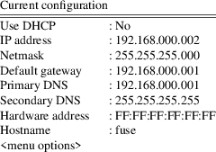

fuse — Sinclair ZX Spectrum emulator
fuse [options]
Fuse is a Sinclair ZX Spectrum emulator. It supports several models (including the 128), with quite faithful emulation of the display and sound.
The emulator can load any of the formats supported by libspectrum(3) — this includes Z80, SNA and SZX snapshots, and PZX, TAP and TZX virtual-tape files. Saving to SZX, Z80 and SNA snapshots and TZX and TAP tape files is supported. The SLT extension to the Z80 format is partly supported (enough for multi-load games); however, loading of the old DAT-file variant is not.
DSK, UDI, FDI, TD0, MGT, IMG, D40, D80, SAD, TRD, SCL and OPD disk images are supported when a disk interface is being emulated, including the integrated disk drives on +3, Pentagon or Scorpion machines as well as the +D, DISCiPLE, Opus Discovery, Beta 128 and Didaktik 80 interfaces. DCK cartridge images are supported when emulating a Timex 2068 variant. Interface 2 ROM cartridges are also supported.
Finally, there is also support for reading and writing the RZX input recording format.
See the COMPRESSED FILES section for details on reading files compressed with bzip2(3), gzip(3) or zip(3).
−−accelerate−loader
Specify whether Fuse should attempt to accelerate tape loaders by “short circuiting” the loading loop. This will in general speed up loading, but may cause some loaders to fail. (Enabled by default, but you can use ‘−−no−accelerate−loader’ to disable). The same as the Media Options dialog’s Accelerate loaders option.
−−aspect−hint
Specify whether the GTK+ and Xlib user interfaces should ‘hint’ to the window manager about the preferred aspect ratio for the graphics window, thus preventing resizing to non-square sizes which lead to Fuse not displaying correctly. This option has been observed to cause problems with some window managers when using the GTK+ UI which can prevent the window from being resized or moved at all. (Enabled by default, but you can use ‘−−no−aspect−hint’ to disable). See also the ‘−−strict−aspect−hint’ option.
−−autosave−settings
Specify whether Fuse’s current settings should be automatically saved on exit. The same as the General Options dialog’s Auto-save settings option.
−−auto−load
Specify whether tape and disk files should be automatically loaded when they are opened using the File, Open... menu option. In the case of TRD/SCL disk images, inserts also a boot loader file when none is available. (Enabled by default, but you can use ‘−−no−auto−load’ to disable). Same as the Media Options dialog’s Auto-load media option.
−−beta128
Emulate a Beta 128 interface. Same as the Disk Peripherals Options dialog’s Beta 128 interface option.
−−beta128−48boot
When a Beta 128 interface is used in 48K or TC2048 emulation the option additionally controls whether the machine boots directly into the TR-DOS system. Same as the Disk Peripherals Options dialog’s Beta 128 auto-boot in 48K machines option.
−−betadisk file
Insert the specified file into the emulated Beta disk interface’s drive A: and select Pentagon mode on startup.
−−bw−tv
Specify whether the display should simulate a colour or black and white television. This option is effective under the GTK+, Win32, Xlib and SDL user interfaces: the others will always simulate a colour TV. The same as the General Options dialog’s Black and white TV option.
−−cmos-z80
This option specifies that Fuse should emulate a CMOS Z80, as opposed to an NMOS Z80. Same as the General Options dialog’s Z80 is CMOS option.
−−competition−code code
Specify the code to be written to competition mode RZX files. The same as the RZX Options dialog’s Competition code option.
−−competition−mode
Specify whether input recordings should be made in ‘competition mode’. The same as the RZX Options dialog’s Competition mode option.
−−compress−rzx
Specify whether RZX files should be written out compressed. (Enabled by default, but you can use ‘−−no−compress−rzx’ to disable). Same as the RZX Options dialog’s Compress RZX data option.
−−confirm−actions
Specify whether ‘dangerous’ actions (those which could cause data loss, for example resetting the Spectrum) require confirmation before occurring. (Enabled by default, but you can use ‘−−no−confirm−actions’ to disable). This option is the same as the General Options dialog’s Confirm actions option.
−−covox
Emulate a Covox sound interface for Pentagon/Scorpion. Same as the General Peripherals Options dialog’s Covox option.
−−debugger−command string
Specify a debugger command to be run before emulator startup. This can be used to set breakpoints or the like. Currently, this is the only method to input multi-line debugger commands. (See the MONITOR/DEBUGGER section for more information).
−−detect−loader
Specify whether Fuse should attempt to detect when the tape is being accessed and start and stop the virtual tape playing automatically. (Enabled by default, but you can use ‘−−no−detect−loader’ to disable). Same as the Media Options dialog’s Detect loaders option.
−−disciple
Emulate a DISCiPLE interface. Same as the Disk Peripherals Options dialog’s DISCiPLE interface option.
−−discipledisk file
Insert the specified file into the emulated DISCiPLE’s drive 1.
−−didaktik80
Emulate a Didaktik 80 (or Didaktik 40) disk interface. Same as the Disk Peripherals Options dialog’s Didaktik 80 interface option.
−−didaktik80disk file
Insert the specified file into the emulated Didaktik 80 (or Didaktik 40)’s drive A.
−−disk−ask−merge
Prompt the user to confirm whether Fuse should try to merge the ‘B’ side of a disk image from a separate file when opening a new single-sided disk image.
−−disk−try−merge mode
Select whether Fuse should try to merge a separate file for the ‘B’ side of a disk image separate file when opening a new disk image. Most double sided disk images are dumped as two single sided disk images e.g. ‘Golden Axe − Side A.dsk’ and ‘Golden Axe − Side B.dsk’. So, if we want to play Golden Axe, first we have to insert the first disk image and when the game asks to insert side B, we have to find and open the second disk image, instead of just ‘flip’-ing the disk inside the drive. If enabled, Fuse will try to open the second image too and create a double sided disk image (merging the two one sided disk images) and insert this merged virtual disk into the disk drive. The function detects whether the file is one side of a double-sided image if the filename matches a pattern like [Ss]ide[ _][abAB12][ _.] in the file name of a disk that is being opened. If found, Fuse will try to open the other side of the disk too substituting the appropriate characters in the filename e.g. 1→2, a→b, A→B. If successful then it will merge the two images and now we have a double sided disk in drive. This means that if we open ‘Golden Axe − Side A.dsk’, then Fuse will try to open ‘Golden Axe − Side B.dsk’ too. Now, we can just ‘flip’ the disk if Golden Axe asks for ‘Side B’. The available options are Never, With single-sided drives and Always.
−−divide
Emulate the DivIDE interface. The same as the Disk Peripherals Options dialog’s DivIDE interface option.
−−divide−masterfile
file
−−divide−slavefile file
Specify an IDE image to be loaded into the DivIDE’s emulated master and slave drives respectively.
−−divide−write−protect
Specify that the emulated DivIDE’s write protect jumper should be considered set. The same as the Disk Peripherals Options dialog’s DivIDE write protect option.
−−divmmc
Emulate the DivMMC interface. The same as the Disk Peripherals Options dialog’s DivMMC interface option.
−−divmmc−file file
Specify an HDF image to be loaded into the DivMMC’s emulated memory card.
−−divmmc−write−protect
Specify that the emulated DivMMC’s write protect jumper that protects EEPROM should be considered set. The same as the Disk Peripherals Options dialog’s DivMMC write protect option.
−−dock file
Insert the specified file into the emulated Timex 2068 variant dock; also select the TC2068 on startup if available.
−D
mode
−−doublescan−mode mode
Specify whether to use doublescan modes in the FB UI. Available values for mode are 0, 1 and 2. 0 means ‘never doublescan’ (use 640×480 at either 72 Hz or 60 Hz), whereas 1 and 2 both mean ‘try to use doublescan’ and will fall back on the 640×480 modes. 1 selects 72 Hz modes (the same size and shape as your typical 640×480), and 2 selects 60 Hz modes (overscan).
If your monitor displays a blank screen when using 1 or 2, press F10 then try a different option or say ‘−−fbmode 640’.
−−drive−plus3a−type
type
−−drive−plus3b−type type
−−drive−beta128a−type
type
−−drive−beta128b−type
type
−−drive−beta128c−type
type
−−drive−beta128d−type
type
−−drive−plusd1−type type
−−drive−plusd2−type type
−−drive−didaktik80a−type
type
−−drive−didaktik80b−type
type
−−drive−disciple1−type
type
−−drive−disciple2−type
type
−−drive−opus1−type type
−−drive−opus2−type
type
Specify a disk drive type to emulate with the associated interface. The available options are Disabled, Single−sided 40 track, Double−sided 40 track, Single−sided 80 track and Double−sided 80 track. See the Disk Options dialog for more information. The Disabled option is not supported for Drive 1 or Drive A of any interface.
−−drive−40−max−track
count
−−drive−80−max−track
count
Specify the maximum number of tracks for 40 and 80 track physical drives respectively.
−−embed−snapshot
Specify whether a snapshot should be embedded in an RZX file when recording is started from an existing snapshot. (Enabled by default, but you can use ‘−−no−embed−snapshot’ to disable). Same as the RZX Options dialog’s Always embed snapshot option.
−−fastload
Specify whether Fuse should run at the fastest possible speed when the virtual tape is playing. (Enabled by default, but you can use ‘−−no−fastload’ to disable). The same as the Media Options dialog’s Fastloading option.
−v
mode
−−fbmode mode
Specify which mode to use for the FB UI. Available values for mode are ‘320’ (which corresponds to a 320×240×256 mode), the default and ‘640’ (a 640×480×256 mode).
−−fuller
Emulate a Fuller Box interface. Same as the General Peripherals Options dialog’s Fuller Box option.
−−full−screen
Specify whether Fuse should run in full screen mode. This option is effective only under the SDL UI.
−g
filter
−−graphics−filter mode
Specify which graphics filter to use if available. The default is normal, which uses no filtering. The available options are 2x, 2xsai, 3x, advmame2x, advmame3x, dotmatrix, half, halfskip, hq2x, hq3x, normal, super2xsai, supereagle, timex15x, timextv, tv2x, paltv, paltv2x, and paltv3x. See the GRAPHICS FILTERS section for more details.
−−graphicsfile file
Set the filename used for graphical output from the emulated ZX Printer. See the PRINTER EMULATION section for more details.
−h
−−help
Give brief usage help, listing available options.
−−if2cart file
Insert the specified file into the emulated Interface 2.
−−interface1
Emulate a Sinclair Interface 1. Same as the General Peripherals Options dialog’s Interface 1 option.
−−interface2
Emulate a Sinclair Interface 2. (Enabled by default, but you can use ‘−−no−interface2’ to disable). Same as the General Peripherals Options dialog’s Interface 2 option.
−−issue2
Emulate an issue 2 keyboard. Same as the General Options dialog’s Issue 2 keyboard option.
−j
device
−−joystick−1 device
Read from device to emulate the first joystick. Fuse will use either ‘/dev/input/js0’ or ‘/dev/js0’ by default.
−−joystick−2 device
As for −−joystick−1 but for the second joystick; the default here is either ‘/dev/input/js1’ or ‘/dev/js1’.
−−joystick−1−output
type
−−joystick−2−output type
−−joystick−keyboard−output
type
Select which joystick interface to attach for the first two real joysticks and the keyboard joystick. The default is 0, which is no output. The available options are 1 (cursor), 2 (kempston), 3 (Sinclair 1), 4 (Sinclair 2), 5 (Timex 1), 6 (Timex 2), and 7 (Fuller). Same as the Joysticks Options dialog’s Joystick type option.
−−joystick−1−fire−1
code
−−joystick−1−fire−2
code
−−joystick−1−fire−3
code
−−joystick−1−fire−4
code
−−joystick−1−fire−5
code
−−joystick−1−fire−6
code
−−joystick−1−fire−7
code
−−joystick−1−fire−8
code
−−joystick−1−fire−9
code
−−joystick−1−fire−10
code
−−joystick−1−fire−11
code
−−joystick−1−fire−12
code
−−joystick−1−fire−13
code
−−joystick−1−fire−14
code
−−joystick−1−fire−15
code
−−joystick−2−fire−1
code
−−joystick−2−fire−2
code
−−joystick−2−fire−3
code
−−joystick−2−fire−4
code
−−joystick−2−fire−5
code
−−joystick−2−fire−6
code
−−joystick−2−fire−7
code
−−joystick−2−fire−8
code
−−joystick−2−fire−9
code
−−joystick−2−fire−10
code
−−joystick−2−fire−11
code
−−joystick−2−fire−12
code
−−joystick−2−fire−13
code
−−joystick−2−fire−14
code
−−joystick−2−fire−15
code
Select which Fuse key code should be triggered by the applicable real joystick button press. The codes are the Fuse keyboard codes corresponding to the keys. The default value is 4096 which corresponds to the virtual joystick fire button. Same as the Joysticks Options dialog’s Joystick fire options.
−−joystick−keyboard−up
code
−−joystick−keyboard−down
code
−−joystick−keyboard−left
code
−−joystick−keyboard−right
code
−−joystick−keyboard−fire
code
Select which Fuse key code should correspond with each direction and fire for the keyboard virtual joystick. The same as the Keyboard Joysticks Options dialog’s Button for UP, Button for DOWN, Button for LEFT, Button for RIGHT and Button for FIRE options respectively.
−−joystick−prompt
If this option is specified, then Fuse will prompt you which form of joystick emulation you wish to use when loading a snapshot. No prompt will be issued if the configuration in the snapshot matches what you are currently using. The same as the General Options dialog’s Snap joystick prompt option.
−−kempston
Emulate a Kempston joystick. Same as the General Peripherals Options dialog’s Kempston joystick option.
−−kempston−mouse
Emulate a Kempston mouse. Same as the General Peripherals Options dialog’s Kempston mouse option.
−−keyboard−arrows−shifted
Treat the keyboard arrow keys as shifted like the ZX Spectrum+ keyboard’s arrow keys or as unshifted like a cursor joystick that maps to the 5, 6, 7 and 8 keys. (Enabled by default, but you can use ‘−−no−keyboard−arrows−shifted’ to disable). Same as the General Peripherals Options dialog’s Use shift with arrow keys option.
−−late−timings
It has been observed that some real Spectrums run such that the screen is rendered one tstate later than on other real hardware. This option specifies that Fuse should emulate such a machine. Same as the General Options dialog’s Late timings option.
−−loading−sound
Specify whether the sound made while tapes are loading should be emulated. (Enabled by default, but you can use ‘−−no−loading−sound’ to disable). Same as the Sound Options dialog’s Loading sound option.
−m
type
−−machine type
Specify machine type to emulate initially. The default is 48, a 48K Spectrum. The available options are 16, 48, 48_ntsc, 128, plus2, plus2a, plus3, 2048, 2068, ts2068, pentagon, pentagon512, pentagon1024, scorpion and se.
−−melodik
Emulate a Melodik AY interface for 16/48k Spectrums. Same as the General Peripherals Options dialog’s Melodik option.
−−mdr−len length
This option controls the number of blocks in a new Microdrive cartridge. Same as the Media Options dialog’s MDR cartridge len option.
−−mdr−random−len
If this option is set, Fuse will use a random Microdrive cartridge length. Same as the Media Options dialog’s Random length MDR cartridge option.
−−microdrive−file
file
−−microdrive−2−file file
−−microdrive−3−file file
−−microdrive−4−file file
−−microdrive−5−file file
−−microdrive−6−file file
−−microdrive−7−file file
−−microdrive−8−file
file
Specify Interface 1 Microdrive cartridge files to open.
−−mouse−swap−buttons
Swap the left and right mouse buttons when emulating the Kempston mouse. The same as the General Peripherals dialog’s Swap mouse buttons option.
−−movie−compr level
This option sets the compression level used when creating movies. Same as the Movie Options dialog’s Movie compression option. The available options are None, Lossless, and High (lossy). The default option is Lossless. See also the MOVIE RECORDING section.
−−movie−start filename
With this command line option, Fuse will start movie recording as soon as the emulator is started. See also the MOVIE RECORDING section.
−−movie−stop−after−rzx
With this command line option, Fuse will stop movie recording when RZX playback or RZX recording ends. Same as the Movie Options dialog’s Stop recording after RZX ends option. (Enabled by default, but you can use ‘−−no−movie−stop−after−rzx’ to disable). See also the MOVIE RECORDING section.
−−multiface1
Emulate a Romantic Robot Multiface One interface. Same as the General Peripherals Options dialog’s Multiface One option.
−−multiface128
Emulate a Romantic Robot Multiface 128 interface. Same as the General Peripherals Options dialog’s Multiface 128 option.
−−multiface3
Emulate a Romantic Robot Multiface 3 interface. Same as the General Peripherals Options dialog’s Multiface 3 option.
−−multiface1-stealth
Set Multiface One stealth/invisible mode. Same as the General Peripherals Options dialog’s Stealth Multiface One option.
−−opus
Emulate an Opus Discovery interface. Same as the Disk Peripherals Options dialog’s Opus Discovery interface option.
−−opusdisk file
Insert the specified file into the emulated Opus Discovery’s drive 1.
−−pal−tv2x
Specify whether the PAL TV 2x and PAL TV 3x scalers should also produce scanlines along the lines of the TV 2x and Timex TV scalers. The same as the General Options dialog’s PAL-TV use TV2x effect option.
−−phantom−typist−mode mode
Specify the keystroke sequence that the "phantom typist" should use when starting a program loading. The available options are Auto, Keyword, Keystroke, Menu, Plus 2A and Plus 3. The same as the Media Options dialog’s Phantom typist mode option.
−p
file
−−playback file
Specify an RZX file to begin playback from.
−−plus3disk file
Insert the specified file into the emulated +3’s A: drive; also select the +3 on startup if available.
−−plus3−detect−speedlock
Specify whether the +3 drives try to detect Speedlock protected disks, and emulate ‘weak’ sectors. If the disk image file (EDSK or UDI) contains weak sector data, than Speedlock detection is automatically omitted. See also the WEAK DISK DATA section. Same as the Disk Options dialog’s +3 Detect Speedlock option.
−−plusd
Emulate a +D interface. Same as the Disk Peripherals Options dialog’s +D interface option.
−−plusddisk file
Insert the specified file into the emulated +D’s drive 1.
−−printer
Specify whether the emulation should include a printer. Same as the General Peripherals Options dialog’s Emulate printers option.
−−rate frame
Specify the frame rate, the ratio of spectrum frame updates to real frame updates. Same as the General Options dialog’s Frame rate option.
−r
file
−−record file
Specify an RZX file to begin recording to.
−−recreated−spectrum
Enable the use of a Recreated ZX Spectrum in ‘Layer A’ (game) mode. This is a Bluetooth keyboard that can be paired to the device where Fuse is running. The same as the General Options dialog’s Recreated ZX Spectrum option.
−−rom−16
file
−−rom−48 file
−−rom−128−0 file
−−rom−128−1 file
−−rom−plus2−0 file
−−rom−plus2−1 file
−−rom−plus2a−0 file
−−rom−plus2a−1 file
−−rom−plus2a−2 file
−−rom−plus2a−3 file
−−rom−plus3−0 file
−−rom−plus3−1 file
−−rom−plus3−2 file
−−rom−plus3−3 file
−−rom−plus3e−0 file
−−rom−plus3e−1 file
−−rom−plus3e−2 file
−−rom−plus3e−3 file
−−rom−tc2048 file
−−rom−tc2068−0 file
−−rom−tc2068−1 file
−−rom−ts2068−0 file
−−rom−ts2068−1 file
−−rom−pentagon−0 file
−−rom−pentagon−1 file
−−rom−pentagon−2 file
−−rom−pentagon512−0 file
−−rom−pentagon512−1 file
−−rom−pentagon512−2 file
−−rom−pentagon512−3 file
−−rom−pentagon1024−0 file
−−rom−pentagon1024−1 file
−−rom−pentagon1024−2 file
−−rom−pentagon1024−3 file
−−rom−scorpion−0 file
−−rom−scorpion−1 file
−−rom−scorpion−2 file
−−rom−scorpion−3 file
−−rom−spec−se−0
file
−−rom−spec−se−1
file
Specify the file to be used for ROM(s) used for each machine. The options respectively refer to the 16K Spectrum (48.rom), 48K Spectrum (48.rom), the two ROMs for the 128K Spectrum (128−0.rom and 128−1.rom), the two ROMs for the +2 (plus2−0.rom and plus2−1.rom), the four ROMs for the +2A (plus3−0.rom, plus3−1.rom, plus3−2.rom and plus3−3.rom), the four ROMs for the +3 (plus3−0.rom, plus3−1.rom, plus3−2.rom and plus3−3.rom), the four enhanced ROMs for the +3e (plus3e−0.rom, plus3e−1.rom, plus3e−2.rom and plus3e−3.rom), the TC2048 ROM (tc2048.rom), the two ROMs for the TC2068 (tc2068−0.rom and tc2068−1.rom), the two ROMs for the TS2068 (tc2068−0.rom and tc2068−1.rom), the two main ROMs and the TR-DOS ROM for the Pentagon 128K (128p−0.rom, 128p−1.rom and trdos.rom), the two main ROMs, the TR-DOS ROM and a reset service ROM for the Pentagon 512K and 1024K (128p−0.rom, 128p−1.rom, trdos.rom and gluck.rom), the four ROMs for the Scorpion 256 (256s−0.rom, 256s−1.rom, 256s−2.rom and 256s−3.rom), and the two ROMs for the Spectrum SE (se−0.rom and se−1.rom).
The names in brackets denote the defaults. Note that not all these ROMs are supplied with Fuse — you must supply your own copies of those which are not.
−−rom−interface−1
file
−−rom−beta128 file
−−rom−plusd file
−−rom−didaktik80 file
−−rom−disciple file
−−rom−multiface1 file
−−rom−multiface128 file
−−rom−multiface3 file
−−rom−opus file
−−rom−speccyboot file
−−rom−usource file
Specify the file to be used for ROM(s) used for each peripheral. The options respectively refer to the Interface 1 ROM (if1−2.rom), the TR-DOS ROM for Beta 128 emulation with the 48K, TC2048, 128K or +2 (trdos.rom), the +D ROM (plusd.rom), the Didaktik 80 ROM (didaktik80.rom), the DISCiPLE ROM (disciple.rom), the Multiface One ROM (mf1.rom), the Multiface 128 ROM (mf128.rom), the Multiface 3 ROM (mf3.rom), the Opus Discovery ROM (opus.rom), the SpeccyBoot ROM (speccyboot−1.4.rom), and the µSource ROM (usource.rom).
The names in brackets denote the defaults. Note that not all these ROMs are supplied with Fuse — you must supply your own copies of those which are not.
−−no−rs232−handshake
This option makes Fuse’s Interface 1 emulation assume that the RS-232 line other end is live when you connect the communication channels. See also the ‘−−rs232−rx’ and ‘−−rs232−tx’ options.
−−rs232−rx
−−rs232−tx
Specify the communication channels (FIFO or file) to be used for Interface 1 RS-232 emulation as RxD and TxD wire. See also the ‘−−rs232−handshake’ options.
−−rzx−autosaves
Specify that, while recording an RZX file, Fuse should automatically add a snapshot to the recording stream every 5 seconds. (Default to on, but you can use ‘−−no−rzx−autosaves’ to disable). Same as the RZX Options dialog’s Create autosaves option; see there for more details.
−−sdl−fullscreen−mode mode
Select a screen resolution for full screen mode. Available values for mode are listed in a table, when Fuse is called with −−sdl−fullscreen−mode list command line option. This option is effective only under the SDL UI.
−−separation type
Give stereo separation of the 128’s AY sound channels. Same as the General Options dialog’s AY stereo separation option. The available options are None, ACB, and ABC. The default option is None.
−−simpleide
Specify whether Fuse will emulate the simple 8-bit IDE interface as used by the Spectrum +3e. Same as the Disk Peripherals Options dialog’s Simple 8-bit IDE option.
−−simpleide−masterfile file
Specify a HDF file to connect to the emulated Simple 8-bit IDE interface’s master channel.
−−simpleide−slavefile file
Specify a HDF file to connect to the emulated Simple 8-bit IDE interface’s slave channel.
−−slt
Support the SLT trap instruction. (Enabled by default, but you can use ‘−−no−slt’ to disable). Same as the Media Options dialog’s Use .slt traps option.
−s
file
−−snapshot file
Specify a snapshot file to load. The file can be in any snapshot format supported by libspectrum(3).
−−sound
Specify whether Fuse should produce sound. (Enabled by default, but you can use ‘−−no−sound’ to disable). Same as the Sound Options dialog’s Sound enabled option.
−d
device
−−sound−device device
Specify the sound output device to use and any options to give that device. If you are not using the SDL UI or using libao or libasound (ALSA) for sound output, then the device parameter just specifies the device to be used for sound output.
If you are using the SDL UI, the device parameter allows you to specify the audio driver to be used (e.g. dsp, alsa, dma, esd and arts).
If you are using libao for sound output, the device parameter allows you to specify the device used for sound output (either ‘live’ to a speaker or to a file) and the parameters to be used for that device. In general, the device parameter has the form driver[:param[=value][,param[=value][,...]]. driver selects the libao driver to be used, either one of the ‘live’ drivers (aixs, alsa, alsa09, arts, esd, irix, macosx, nas, oss or sun) or a file driver (au, raw, wav or null). The available parameter and value pairs for each device are:
|
• |
aixs: AIX audio system |
•
|
dev=device |
‘device’ gives the AIX sound device.
|
• |
alsa: Advanced Linux Sound Architecture version 0.5.x |
•
|
card=num |
‘num’ gives the ALSA card number.
|
• |
dev=num |
‘num’ gives the ALSA device number.
|
• |
buf_size=num |
‘num’ gives the ALSA buffer size in bytes.
|
• |
alsa09: Advanced Linux Sound Architecture version 0.9+ |
•
|
dev=string |
‘string’ specifies the ALSA device e.g. hw:1.2
|
• |
buffer_time=num |
‘num’ gives the ALSA buffer time in microseconds.
|
• |
period_time=num |
‘num’ gives the ALSA period time in microseconds.
|
• |
use_mmap=yes|y|true|t|1 |
specifies that libao use memory mapped transfer.
|
• |
arts: aRts soundserver: no parameters. |
|||
|
• |
esd: Enlightened Sound Daemon. |
•
|
host=string |
‘string’ gives the ESD host specification.
|
• |
irix: IRIX Audio Library: no parameters. |
|||
|
• |
macosx: MacOS X CoreAudio: no parameters. |
|||
|
• |
nas: Network Audio System. |
•
|
host=string |
‘string’ gives the NAS host specification.
|
• |
buf_size=num |
‘num’ gives the buffer size on the server.
|
• |
oss: Open Sound System. |
•
|
dsp=string |
‘string’ gives the OSS device to be used e.g. /dev/sound/dsp1
|
• |
sun: SUN audio system. |
•
|
dev=string |
‘string’ gives the audio device to be used.
|
• |
au: SUN Sparc audio file: no parameters. |
|||
|
• |
raw: raw file. |
•
|
byteorder=string |
‘string’ can be any of native (host native byteorder), big (big endian) or little (little endian).
|
• |
wav: Microsoft audio file: no parameters. |
|||
|
• |
null: null output: no parameters. |
|||
|
• |
debug: for debugging libao. |
Finally, each of the file output types (au, raw and wav) have an extra option ‘file=filename’ where ‘filename’ gives the file output will be directed to. This defaults to ‘fuse−sound.ao’ if it is not specified.
Some examples of use:
fuse −d alsa09:dev=hw:1
causes Fuse to use ALSA 0.9+ output with the second (#1) sound card.
fuse −d raw:byteorder=little,file=enigma.raw
causes Fuse to save little endian words to ‘enigma.raw’.
See the ‘DEVICE’ section of ogg123(1) for up to date information of devices and options (except for the ‘file’ option which is provided by Fuse itself).
If you are
using libasound or ALSA for sound output, the
device parameter allows you to specify the device
used for sound output and some parameters to be used for
that device. In general, the device parameter has the
form
devstr or
param[=value][,param[=value][,...][,devstr].
|
• |
devstr: selects the ALSA device used, it can be any complex or simple ALSA device name. e.g.: default or hw:0 or tee:plughw:0,'/tmp/out.raw',raw. See the alsa-lib pcm api reference at http://www.alsa−project.org/alsa−doc/alsa−lib/pcm.html for further explanation. | ||
|
• |
param and values: |
•
|
buffer=nnnn: set the ALSA buffer in frames, smaller value cause smaller sound delay but may more buffer underrun (pops and clicks), larger value cause longer delay but fewer underrun. By default Fuse determine the buffer size based on the actual sound frequency. |
If you use some special plugin for your pcm device (e.g.: dmix) or your card not support some needed parameter (e.g. cannot play other only 48 kHz stereo sound like some AC97 sound card) may cause Fuse unable to set the needed buffer size, appropriate sound frequency, channels and so on, therefore you cannot get optimal result or not hear the sound at all. In this case try the plughw:#, (where # mean your card number counted from 0) for ALSA device.
|
• |
verbose : if given, fuse report ALSA buffer underruns to stderr. |
Some examples of use:
fuse −d verbose,buffer=2000
causes Fuse to use the default ALSA device with 2000 frame length buffer and report ALSA buffer underruns on stderr.
fuse −d tee:plughw:0,'/tmp/aufwm.raw',raw
causes Fuse to use the first card and parallel save the raw audio samples into /tmp/aufwm.raw file.
−−sound−force−8bit
Force the use of 8-bit sound, even if 16-bit is possible. Same as the Sound Options dialog’s Force 8-bit option.
−f
frequency
−−sound−freq frequency
Specify what frequency Fuse should use for the sound device, the default is 44.1 kHz, but some devices only support a single frequency or a limited range (e.g. 48 kHz or up to 22 kHz).
−−speaker−type type
Select the output speaker emulation, type can be TV speaker, Beeper or Unfiltered. Same as the Sound Options dialog’s Speaker type option.
−−speccyboot
Emulate a SpeccyBoot Ethernet interface. Same as the General Peripherals Options dialog’s SpeccyBoot option. See the SpeccyBoot web page at http://patrikpersson.github.io/speccyboot/ for full details on the SpeccyBoot.
−−speccyboot−tap device
Specify the TAP device to use for SpeccyBoot emulation.
−−specdrum
Emulate a SpecDrum interface. Same as the General Peripherals Options dialog’s SpecDrum option. See the World of Spectrum Infoseek web page at http://www.worldofspectrum.org/infoseekid.cgi?id=1000062 for manuals, software and more.
−−spectranet
Specify whether Fuse will emulate the Spectranet Ethernet interface. Same as the General Peripherals Options dialog’s Spectranet option. See the SPECTRANET EMULATION section for more details.
−−spectranet−disable
This option controls the state of the Spectranet automatic page-in jumper (J2). Same as the General Peripherals Options dialog’s Spectranet disable option. See the SPECTRANET EMULATION section for more details.
−−speed percentage
Specify the speed (as a percentage of real Spectrum speed) at which emulation should attempt to proceed. Same as the General Options dialog’s Emulation speed option.
−−statusbar
For the GTK+ and Win32 UI, enables the statusbar beneath the display. For the Xlib and SDL UI, enables the status icons showing whether the disk and tape are being accessed. Same as the General Options dialog’s Show statusbar option.
−−strict−aspect−hint
For the GTK+ UI, use stricter limits for the aspect ratio limits set by the ‘−−aspect−hint’ option. This can cause some window managers (for example, metacity(1)) to not allow the window to be resized and moved, but is necessary to prevent others (for example, fvwm(1)) from being able resize the window away from square.
−−svga−modes mode1,mode2,mode3
Specify which SVGA mode to use for the SVGAlib UI at different screen sizes. Available values for mode1, mode2 and mode3 are listed in a table, when Fuse called with −−svga−modes list command line option. When user select a not available mode for a size, Fuse just ignore and try to find the best mode for it. e.g. with −−svga−modes 0,0,12 Fuse use the specified 1024×768×256 SVGA mode for triple size filters, but select SVGA modes automatically for normal or double size filters. The above mode number is just an example, and mode numbers and their meanings may vary graphics card by graphics card.
−t
file
−−tape file
Specify a virtual tape file to use. It must be in PZX, TAP or TZX format.
−−textfile file
Set the filename used for text output from the emulated printers. See the PRINTER EMULATION section below for more details.
−−traps
Support traps for ROM tape loading/saving. (Enabled by default, but you can use ‘−−no−traps’ to disable). Same as the Media Options dialog’s Use tape traps option.
−−unittests
This option runs a testing framework that automatically checks portions of code, comparing actual results with expected ones. It is meant to detect broken code before a release. There is not graphical mode, the program just ends with exit code 0 if all tests are good or prints error messages to stdout and ends with exit code greater than 0 if there are failed tests.
−−usource
Emulate a µSource interface. Same as the General Peripherals Options dialog’s µSource option.
−V
−−version
Show which version of Fuse is being used.
−−volume−ay volume
Sets the relative volume of the AY-3-8912 chip from a range of 0–100%. Same as the Sound Options dialog’s AY volume option.
−−volume−beeper volume
Sets the relative volume of the beeper from a range of 0–100%. Same as the Sound Options dialog’s Beeper volume option.
−−volume−covox volume
Sets the relative volume of the Covox from a range of 0–100%. Same as the Sound Options dialog’s Covox volume option.
−−volume−specdrum volume
Sets the relative volume of the SpecDrum from a range of 0–100%. Same as the Sound Options dialog’s SpecDrum volume option.
−−writable−roms
Allow Spectrum programs to overwrite the ROM(s). The same as the General Options dialog’s Allow writes to ROM option.
−−zxatasp
Specify whether Fuse emulate the ZXATASP interface. Same as the Disk Peripherals Options dialog’s ZXATASP interface option.
−−zxatasp−upload
Specify the state of the ZXATASP upload jumper. Same as the Disk Peripherals Options dialog’s ZXATASP upload option.
−−zxatasp−write−protect
Specify the state of the ZXATASP write protect jumper. Same as the Disk Peripherals Options dialog’s ZXATASP write protect option.
−−zxatasp−masterfile file
Specify a HDF file to connect to the emulated ZXATASP interface’s master channel.
−−zxatasp−slavefile file
Specify a HDF file to connect to the emulated ZXATASP interface’s slave channel.
−−zxcf
Specify whether Fuse emulate the ZXCF interface. Same as the Disk Peripherals Options dialog’s ZXCF interface option.
−−zxcf−upload
Specify the state of the ZXCF upload jumper. Same as the Disk Peripherals Options dialog’s ZXCF upload option.
−−zxcf−cffile file
Specify a HDF file to connect to the emulated ZXCF interface.
−−zxmmc
Emulate the ZXMMC interface. The same as the Disk Peripherals Options dialog’s ZXMMC interface option.
−−zxmmc−file file
Specify an HDF image to be loaded into the ZXMMC’s emulated memory card.
−−zxprinter
Emulate the ZX Printer. Same as the General Peripherals Options dialog’s ZX Printer option.
All long options which control on/off settings can be disabled using ‘−−no−foo’ (for an option ‘−−foo’). For example, the opposite of ‘−−issue2’ is ‘−−no−issue2’. These options can also be modified while the emulator is running, using the options dialogs — see the documentation for the Options menu in the MENUS AND KEYS section for details.
Fuse supports various front-ends, or UIs (user interfaces). The usual one is GTK+-based, but there are also SDL, Win32, Xlib, SVGAlib and framebuffer ones.
The important difference to note is that GTK+ and Win32 versions uses ‘native’ dialog boxes etc. (behaving like a fairly normal GUI-based program) while the others use an alternative, Fuse-specific ‘widget UI’. This latter front-end is easily spotted by the way it uses the main Fuse window/screen for menus and dialogs, and uses the Spectrum’s own font.
Since many of the keys available are devoted to emulation of the Spectrum’s keyboard, the primary way of controlling Fuse itself (rather than the emulated machine) is via the menus. There are also function key shortcuts for some menu options.
In the GTK+ and Win32 version, the menu bar is always visible at the top of the Fuse window. You can click on a menu name to pop it up. Alternatively, you can press F1 to display a pop-up version of the menu bar, which you can then navigate with the cursor keys or mouse.
In the widget UI pressing F1 is the only way to get the main menu; and unlike the GTK+ version, the emulator pauses while the menus are being navigated. The menus show which key to press for each menu option in brackets. Pressing Esc exits a menu, and pressing Enter exits the menu system entirely (as well as ‘confirming’ any current dialog).
Here’s what the menu options do, along with the function key mappings for those items which have them:
F3
File, Open...
Open a Spectrum file. Snapshots will be loaded into memory; tape images will be inserted into the emulated tape deck, and if the Auto-load media option is set will being loading. Opening a disk image or a Timex dock image will cause the appropriate machine type (+3, Pentagon or TC2068) to be selected with the image inserted, and disks will automatically load if the Auto-load media option is set. See the FILE SELECTION section below for details on how to choose the file. Note that this behaviour is different from previous versions of Fuse, when this option would open only snapshots.
F2
File, Save Snapshot...
Save a snapshot (machine state, memory contents, etc.) to file. You can select the filename to be saved to. If it has a .szx, .z80 or .sna extension, the snapshot will be saved in that format. Otherwise, it will be saved as a .szx file.
File, Recording, Record...
Start recording input to an RZX file, initialised from the current emulation state. You will be prompted for a filename to use.
File, Recording, Record from snapshot...
Start recording input to an RZX file, initialised from a snapshot. You will first be asked for the snapshot to use and then the file to save the recording to.
File, Recording, Continue recording...
Continue recording input into an existing RZX file from the last recorded state. Finalised recordings cannot be resumed. You will be prompted for the recording to continue.
Insert
File, Recording, Insert snapshot
Inserts a snapshot of the current state into the RZX file. This can be used at a later point to roll back to the inserted state by using one of the commands below.
Delete
File, Recording, Rollback
Rolls back the recording to the point at which the previous snapshot was inserted. Recording will continue from that point.
File, Recording, Rollback to...
Roll back the recording to any snapshot which has been inserted into the recording.
File, Recording, Play...
Playback recorded input from an RZX file. This lets you replay keypresses recorded previously. RZX files generally contain a snapshot with the Spectrum’s state at the start of the recording; if the selected RZX file doesn’t, you’ll be prompted for a snapshot to load as well.
File, Recording, Stop
Stop any currently-recording/playing RZX file.
File, Recording, Finalise...
Compact a RZX file. Any interspersed snapshot will be removed and the recording cannot be continued. All action replays submitted to the RZX Archive should be finalised.
File, AY Logging, Record...
Start recording the bytes output via the AY-3-8912 sound chip to a PSG file. You will be prompted for a filename to save the recording to.
File, AY Logging, Stop
Stop any current AY logging.
File, Screenshot, Open SCR Screenshot...
Load an SCR screenshot (essentially just a binary dump of the Spectrum’s video memory) onto the current screen. Fuse supports screenshots saved in the Timex hi-colour and hi-res modes as well as ‘normal’ Spectrum screens, and will make a simple conversion if a hi-colour or hi-res screenshot is loaded onto a non-Timex machine.
File, Screenshot, Save Screen as SCR...
Save a copy of whatever’s currently displayed on the Spectrum’s screen as an SCR file. You will be prompted for a filename to save the screenshot to.
File, Screenshot, Open MLT Screenshot...
Load an MLT screenshot onto the current screen. The MLT format is similar to the SCR format but additionally supports capturing images that use techniques to display more than two colours in each Spectrum attribute square. Fuse will only load the bitmap version of an image on a Sinclair machine but on a Timex clone it can show the full colour detail captured in the image by using the hi-colour mode.
File, Screenshot, Save Screen as MLT...
Save a copy of whatever’s currently displayed on the Spectrum’s screen as an MLT file. You will be prompted for a filename to save the screenshot to.
File, Screenshot, Save Screen as PNG...
Save the current screen as a PNG file. You will be prompted for a filename to save the screenshot to.
File, Scalable Vector Graphics, Start capture in line mode...
Start trapping the video output functions present in ROM to copy the picture to SVG files, thus creating vectorized scalable picture; it is expected to be fully operational in BASIC only, but few machine code programs could work, if they use the ROM addresses to output text or graphics. The initial picture size is 256×176, but it is increased everytime a ‘scroll’ happens. On every CLS a new file will be created, with an increasing sequence number. CIRCLEs will be described as a sequence of lines, so the original ‘imprecisions’ will be still visible. The text output will be fully understood and decoded: normal ASCII characters will be converted into COURIER scalable fonts, UDG graphics into dot matrix areas, GRAPHICS blocky characters into small squares. A slightly transparent output permits to show a bit of the overlapped text and graphics elements. Lower portion of the screen (normally bound to stream #0 and #1) won’t be captured.
File, Scalable Vector Graphics, Start capture in dot mode...
As above, but line capture is disabled. A line will be rendered as a sequence of dots.
File, Scalable Vector Graphics, Stop capture
Stop the SVG capture function.
File, Movie, Record...
Fuse can record movie (video and audio) into a file with special format which can be converted later to a common video file format with the fmfconv(1) utility. You will be prompted for a filename to save video. Please see MOVIE RECORDING section.
File, Movie, Record from RZX...
Start movie recording and RZX playback at the same time. You will be prompted for a filename to play from and a filename to save video.
File, Movie, Pause
Pause movie recording which is currently in progress.
File, Movie, Continue
Resume movie recording which has been previously paused.
File, Movie, Stop
Stop movie recording which is currently in progress.
File, Load Binary Data...
Load binary data from a file into the Spectrum’s memory. After selecting the file to load data from, you can choose where to load the data and how much data to load.
File, Save Binary Data...
Save an arbitrary chunk of the Spectrum’s memory to a file. Select the file you wish to save to, followed by the location and length of data you wish to save.
F10
File, Exit
Exit the emulator. A confirmation dialog will appear checking you actually want to do this.
F4
Options, General...
Display the General Options dialog, letting you configure Fuse. (With the widget UI, the keys shown in brackets toggle the options, Enter confirms any changes, and Esc aborts). Note that any changed settings only apply to the currently-running Fuse.
The options available are:
Emulation speed
Set how fast Fuse will attempt to emulate the Spectrum, as a percentage of the speed at which the real machine runs. If your machine isn’t fast enough to keep up with the requested speed, Fuse will just run as fast as it can. Note that if the emulation speed is faster than 500%, no sound output will be produced.
Frame rate
Specify the frame rate, the ratio of spectrum frame updates to real frame updates. This is useful if your machine is having trouble keeping up with the spectrum screen updates.
Issue 2 keyboard
Early versions of the Spectrum used a different value for unused bits on the keyboard input ports, and a few games depended on the old value of these bits. Enabling this option switches to the old value, to let you run them.
Recreated ZX Spectrum
Enable the use of a Recreated ZX Spectrum in ‘Layer A’ (game) mode. This is a Bluetooth keyboard that can be paired to the device where Fuse is running.
Use shift with arrow keys
Treat the keyboard arrow keys as shifted like the ZX Spectrum+ keyboard’s arrow keys or as unshifted like a cursor joystick that maps to the 5, 6, 7 and 8 keys.
Allow writes to ROM
If this option is selected, Fuse will happily allow programs to overwrite what would normally be ROM. This probably isn’t very useful in most circumstances, especially as the 48K ROM overwrites parts of itself.
Late timings
If selected, Fuse will cause all screen-related timings (for example, when the screen is rendered and when memory contention occurs) to be one tstate later than “normal”, an effect which is present on some real hardware.
Z80 is CMOS
If selected, Fuse will emulate a CMOS Z80, as opposed to an NMOS Z80. The undocumented ‘OUT (C),0’ instruction will be replaced with ‘OUT (C),255’ and emulation of a minor timing bug in the NMOS Z80’s ‘LD A,I’ and ‘LD A,R’ instructions will be disabled.
RS-232 handshake
If you turn this option off, Fuse assumes the RS-232 line other end is live when you connect the communication channels. See also the ‘−−rs232−rx’ and ‘−−rs232−tx’ options.
Black and white TV
This option allows you to choose whether to simulate a colour or black and white television. This is effective only under the GTK+, Win32, Xlib and SDL user interfaces: the others will always simulate a colour TV.
PAL-TV use TV2x effect
This option allows you to choose whether the PAL TV 2x and higher scalers also reproduce scanlines in the same way as the TV 2x, TV 3x and Timex TV scalers.
Show statusbar
For the GTK+ and Win32 UI, enables the statusbar beneath the display. For the SDL UI, enables the status icons showing whether the disk and tape are being accessed. This option has no effect for the other user interfaces.
Snap joystick prompt
If set, Fuse will prompt you which physical joystick or keyboard you want to connect to the joystick interface enabled in the snapshot unless it already matches your current configuration.
Confirm actions
Specify whether ‘dangerous’ actions (those which could cause data loss, for example resetting the Spectrum) require confirmation before occurring.
Auto-save settings
If this option is selected, Fuse will automatically write its currently selected options to its configuration file on exit (either in xml format if libxml2 was available when Fuse was compiled or plain text). If this option is off, you’ll have to manually use Options, Save afterwards to ensure that this setting gets written to Fuse’s configuration file. Note that if you turn this option on, loading a snapshot could enable peripherals that would be written permanently to the configuration file.
Options, Media...
Display the Media Options dialog, letting you configure Fuse’s tape and Microdrive options. (With the widget UI, the keys shown in brackets toggle the options, Enter confirms any changes, and Esc aborts). Note that any changed settings only apply to the currently-running Fuse.
Auto-load media
On many occasions when you open a tape or disk file, it’s because it’s got a program in you want to load and run. If this option is selected, this will automatically happen for you when you open one of these files using the File, Open... menu option — you must then use the Media menu to use tapes or disks for saving data to, or for loading data into an already running program.
Detect loaders
If this option is enabled, Fuse will attempt to detect when a loading routine is in progress, and then automatically start the virtual tape to load the program in. This is done by using a heuristic to identify a loading routine, so is by no means infallible, but works in most cases.
Phantom typist mode
Specify the keystroke sequence that the "phantom typist" should use when starting a program loading. Available options are
Auto
Keyword
Keystroke
Menu
Plus 2A
Plus 3
The first four of these correspond to automatic detection based on machine model, keyword based entry, keystroke based entry, and selection from a 128K style menu. Plus 2A and Plus 3 also correspond to selection from a 128K style menu, but have special handling for games which need to be loaded with ‘LOAD ""CODE’. The most likely use for this option will be use Keystroke if you have changed the default 48K ROM for one with keystroke entry.
Fastloading
If this option is enabled, then Fuse will run at the fastest possible speed when the virtual tape is playing, thus dramatically reducing the time it takes to load programs. You may wish to disable this option if you wish to stop the tape at a specific point.
Use tape traps
Ordinarily, Fuse intercepts calls to the ROM tape-loading routine in order to load from tape files more quickly when possible. But this can (rarely) interfere with TZX loading; disabling this option avoids the problem at the cost of slower (i.e. always real-time) tape-loading. When tape-loading traps are disabled, you need to start tape playback manually, by pressing F8 or choosing the Media, Tape, Play menu item. Fuse also uses tape traps to intercept the tape-saving routine in the ROM to save tape files quickly, tapes can also be saved using the Media, Tape, Record Start menu item.
Accelerate loaders
If this option is enabled, then Fuse will attempt to accelerate tape loaders by “short circuiting” the loading loop. This will in general speed up loading, but may cause some loaders to fail.
Use .slt traps
The multi-load aspect of SLT files requires a trap instruction to be supported. This instruction is not generally used except for this trap, but since it’s not inconceivable that a program could be wanting to use the real instruction instead, you can choose whether to support the trap or not.
MDR cartridge len
This option controls the number of blocks in a new Microdrive cartridge. If the value smaller than 10 or greater than 254 Fuse assumes 10 or 254. Average real capacity is around 180 blocks (90 Kb).
Random length MDR cartridge
If this option is enabled, Fuse will use a random Microdrive cartridge length (around 180 blocks) instead of the length specified in the MDR cartridge len option.
Options, Sound...
Display the Sound Options dialog, letting you configure Fuse’s sound output. (With the widget UI, the keys shown in brackets toggle the options, Enter confirms any changes, and Esc aborts). Note that any changed settings only apply to the currently-running Fuse.
Sound enabled
Specify whether sound output should be enabled at all. When this option is disabled, Fuse will not make any sound.
Loading sound
Normally, Fuse emulates tape-loading noise when loading from PZXs, TAPs or TZXs in real-time, albeit at a deliberately lower volume than on a real Spectrum. You can disable this option to eliminate the loading noise entirely.
AY stereo separation
By default, the sound output is mono, since this is all you got from an unmodified Spectrum. But enabling this option gives you so-called ACB stereo (for sound from the 128 and other clone’s AY-3-8912 sound chip).
Force 8-bit
Force the use of 8-bit sound even if 16-bit (the default) is available. Note that (when the option is enabled) if 8-bit sound isn’t available then there will be no sound at all, so it’s best not to use this option unless you have a specific need for it.
Speaker type
This option allows the emulation of the sound output system to be modified. Different choices of speaker limit the bass and treble response that can be produced from the machine. Choose between a “TV” type speaker and a small “Beeper” type speaker that significantly limits bass and treble response. Choose “Unfiltered” to get unmodified (but less accurate) sound output.
AY volume
Sets the relative volume of the AY-3-8912 chip from a range of 0–100%.
Beeper volume
Sets the relative volume of the beeper from a range of 0–100%.
Covox volume
Sets the relative volume of the Covox from a range of 0–100%.
SpecDrum volume
Sets the relative volume of the SpecDrum from a range of 0–100%.
Options, Peripherals, General...
Display the General Peripherals Options dialog, letting you configure the peripherals which Fuse will consider to be attached to the emulated machine. (With the widget UI, the keys shown in brackets toggle the options, Enter confirms any changes, and Esc aborts). Note that any changed settings only apply to the currently-running Fuse. Also note that any changes that enable and disable peripherals may result in a hard reset of the emulated machine.
Kempston joystick
If this option is selected, Fuse will emulate a Kempston joystick interface (probably the most widely supported type on the Spectrum). Note that this option is basically equivalent to plugging the interface itself into a Spectrum, not to connecting a joystick; this affects how the Spectrum responds to a read of input port 31. To use a Kempston joystick in a game, this option must be enabled, and you must also select a Kempston joystick the Options, Joysticks menu.
Kempston mouse
If this option is selected, Fuse will emulate a Kempston mouse interface.
If you’re using Fuse full-screen, your mouse is automatically used as if attached to the Kempston interface. Otherwise, you’ll need to click on the Spectrum display in order to tell Fuse to grab the pointer (and make it invisible); to tell Fuse to release it, click the middle button (or wheel) or press Escape.
With the framebuffer UI, Fuse prefers to use GPM; if this is not available, it will fall back to built-in PS/2 mouse support. In this mode, it tries /dev/input/mice, /dev/mouse then /dev/psaux, stopping when it successfully opens one. The first of these is preferred since (at least on Linux, with a 2.6-series kernel) any type of mouse can be used and any connected mouse may be used.
Swap mouse buttons
If this option is enabled, the left and right mouse buttons will be swapped when emulating a Kempston mouse.
Fuller Box
If this option is selected, Fuse will emulate a Fuller Box AY sound and joystick interface. This emulation is only available for the 16k, 48k and TC2048 machines.
Melodik
If this option is selected, Fuse will emulate a Melodik AY sound interface. These interfaces and many similar ones were produced to make the 48K Spectrum compatible with the same AY music as the 128K Spectrum. This emulation is only available for the 16k, 48k and TC2048 machines.
Interface 1
If this option is selected, Fuse will emulate the simple Sinclair Interface 1, and allow Microdrive cartridges to be connected and disconnected via the Media, Interface 1, Microdrive menus. It also enables support for the Interface 1 RS-232 interface.
Interface 2
If this option is selected, Fuse will emulate a cartridge port as found on the Interface 2. Cartridges can then be inserted and removed via the Media, Cartridge, Interface 2 menu. Note that the Pentagon, Scorpion, Interface 2, ZXATASP and ZXCF all use the same hardware mechanism for accessing some of their extended features, so only one of these should be selected at once or unpredictable behaviour will occur.
Multiface One
If this option is selected, Fuse will emulate the Romantic Robot Multiface One. Available for 16K, 48K and Timex TC2048 machines.
Multiface 128
If this option is selected, Fuse will emulate the Romantic Robot Multiface 128. Available for 16K, 48K, Timex TC2048, 128K, +2 and SE machines.
Multiface 3
If this option is selected, Fuse will emulate the Romantic Robot Multiface 3. Available for +2A, +3 and +3e machines.
Stealth Multiface One
This option controls the ‘invisible’ or ‘stealth’ mode of Multiface One, as the physical switch on the side of the interface.
Emulate printers
If this option is selected, Fuse will emulate a printer. See the PRINTER EMULATION section for more details.
ZX Printer
If this option is selected, Fuse will emulate the ZX Printer. See the PRINTER EMULATION section for more details.
SpeccyBoot interface
If this option is selected, Fuse will emulate a SpeccyBoot interface which allows booting a ZX Spectrum over an Ethernet network. See the SpeccyBoot web page at http://patrikpersson.github.io/speccyboot/ for more details.
SpecDrum interface
If this option is selected, Fuse will emulate a Cheetah SpecDrum sound interface. See the World of Spectrum Infoseek web page at http://www.worldofspectrum.org/infoseekid.cgi?id=1000062 for manuals, software and more. This emulation is only available for the 48k, 128k and TC2048 machines.
Spectranet
If this option is selected, Fuse will emulate the Spectranet interface, which provides an Ethernet interface for the Spectrum. See the SPECTRANET EMULATION section for more details.
Spectranet disable
This option controls the state of the Spectranet automatic page-in jumper (J2). See the SPECTRANET EMULATION section for more details.
µSource
If this option is selected, Fuse will emulate a Currah µSource interface. See the World of Spectrum Infoseek web page at http://www.worldofspectrum.org/infoseekid.cgi?id=1000080 for the manual.
Covox interface
If this option is selected, Fuse will emulate a Covox digital sound interface. This emulation is only available for the Pentagon, Pentagon 512k, Pentagon 1024k and Scorpion machines. The Pentagon variants use port 0xfb and the Scorpion version uses port 0xdd.
Options, Peripherals, Disk...
Display the Disk Peripherals Options dialog, letting you configure the disk interface peripherals which Fuse will consider to be attached to the emulated machine. (With the widget UI, the keys shown in brackets toggle the options, Enter confirms any changes, and Esc aborts). Note that any changed settings only apply to the currently-running Fuse. Also note that any changes that enable and disable peripherals may result in a hard reset of the emulated machine.
Simple 8-bit IDE
If this option is selected, Fuse will emulate the simple 8-bit IDE interface as used by the Spectrum +3e, and allow hard disks to be connected and disconnected via the Media, IDE, Simple 8-bit menu.
ZXATASP interface
If this option is selected, Fuse will emulate the ZXATASP interface, which provides both additional RAM and an IDE interface. See the ZXATASP AND ZXCF section for more details.
ZXATASP upload
This option controls the state of the ZXATASP upload jumper. See the ZXATASP AND ZXCF section for more details.
ZXATASP write protect
This option controls the state of the ZXATASP write protect jumper. See the ZXATASP AND ZXCF section for more details.
ZXCF interface
If this option is selected, Fuse will emulate the ZXCF interface, which provides both additional RAM and a CompactFlash interface. See the ZXATASP AND ZXCF section for more details.
ZXCF upload
This option controls the state of the ZXCF upload jumper. See the ZXATASP AND ZXCF section for more details.
ZXMMC interface
If this option is selected, Fuse will emulate the ZXMMC interface. Available for +2A, +3 and +3e machines.
DivIDE interface
If this option is selected, Fuse will emulate the DivIDE interface. See the DIVIDE section for more details.
DivIDE write protect
This option controls the state of the DivIDE write protection jumper. See the DIVIDE section for more details.
DivMMC interface
If this option is selected, Fuse will emulate the DivMMC interface. See the DIVMMC section for more details.
DivMMC write protect
This option controls the state of the DivMMC write protection jumper that prevents flashing the EEPROM chip. See the DIVMMC section for more details.
+D interface
If this option is selected, Fuse will emulate the +D interface. See the +D EMULATION section for more details.
Didaktik 80 interface
If this option is selected, Fuse will emulate the Didaktik 80 (or Didaktik 40) interface. See the DIDAKTIK 80 EMULATION section for more details.
DISCiPLE interface
If this option is selected, Fuse will emulate the DISCiPLE interface. See the DISCIPLE EMULATION section for more details.
Beta 128 interface
If this option is selected, Fuse will emulate the Beta 128 interface. See the BETA 128 EMULATION section for more details. Beta 128 emulation is enabled for the Pentagon and Scorpion machines regardless of this option.
Beta 128 auto-boot in 48K machines
If this option is selected, then when a Beta 128 interface is used in 48K or TC2048 emulation, the machine will boot directly into the TR-DOS system.
Opus Discovery interface
If this option is selected, Fuse will emulate the Opus Discovery interface. See the OPUS DISCOVERY EMULATION section for more details.
Options, RZX...
Display the RZX Options dialog, letting you configure how Fuse’s deals with RZX input recordings. (With the widget UI, the keys shown in brackets toggle the options, Enter confirms any changes, and Esc aborts). Note that any changed settings only apply to the currently-running Fuse.
Create autosaves
If this option is selected, Fuse will add a snapshot into the recording stream every 5 seconds while creating an RZX file, thus enabling the rollback facilities to be used without having to explicitly add snapshots into the stream. Older snapshots will be pruned from the stream to keep the file size and number of snapshots down: each snapshot up to 15 seconds will be kept, then one snapshot every 15 seconds until one minute, then one snapshot every minute until 5 minutes, and then one snapshot every 5 minutes. Note that this “pruning” applies only to automatically inserted snapshots: snapshots manually inserted into the stream will never be pruned.
Compress RZX data
If this option is selected, and zlib was available when Fuse was compiled, any RZX files written by Fuse will be compressed. This is generally a good thing as it makes the files significantly smaller, and you probably want to turn it off only if you’re debugging the RZX files or there’s some other program which doesn’t support compressed RZX files.
Competition mode
Any input recordings which are started when this option is selected will be made in ‘competition mode’. In essence, this means that Fuse will act just like a real Spectrum would: you can’t load snapshots, pause the emulation in any way, change the speed or anything that you couldn’t do on the real machine. If any of these things are attempted, or if the emulated Fuse is running more than 5% faster or slower than normal Spectrum speed, then the recording will immediately be stopped.
If libgcrypt was available when Fuse was compiled, then recordings made with competition mode active will be digitally signed, in theory to ‘certify’ that it was made with the above restrictions in place. However, this procedure is not secure (and cannot be made so), so the presence of any signature on an RZX file should not be taken as providing proof that it was made with competition mode active. This feature is included in Fuse solely as it was one of the requirements for Fuse to be used in an on-line tournament.
Competition code
The numeric code entered here will be written into any RZX files made in competition mode. This is another feature for on-line tournaments which can be used to ‘prove’ that the recording was made after a specific code was released. If you’re not playing in such a tournament, you can safely ignore this option.
Always embed snapshot
Specify whether a snapshot should be embedded in an RZX file when recording is started from an existing snapshot.
Options, Movie...
Display the Movie Options dialog, letting you configure how Fuse’s deals with movie recordings.
Movie compression
This option set the compression level to None, Lossless or High. (See the MOVIE RECORDING section for more information).
Stop recording after RZX ends
If this option is selected, Fuse will stop any movie recording after a RZX playback is finished.
Options, Joysticks
Fuse can emulate many of the common types of joystick which were available for the Spectrum. The input for these emulated joysticks can be taken from real joysticks attached to the emulating machine (configured via the Options, Joysticks, Joystick 1... and Options, Joysticks, Joystick 2... options), or from the q, a, o, p, and Space keys on the emulating machines keyboard, configured via the Options, Joysticks, Keyboard... option. Note that when using the keyboard to emulate a joystick, the q, a, o, p, and Space keys will not have their normal effect (to avoid problems with games which do things like use p for pause when using a joystick).
Each of the joysticks (including the ‘fake’ keyboard joystick) can be configured to emulate any one of the following joystick types:
None
No joystick: any input will simply be ignored.
Cursor
A cursor joystick, equivalent to pressing 5 (left), 6 (down), 7 (up), 8 (right), and 0 (fire).
Kempston
A Kempston joystick, read from input port 31. Note that the Options, Peripherals, General, Kempston interface option must also be set for the input to be recognised.
Sinclair 1
Sinclair 2
The ‘left’ and ‘right’ Sinclair joysticks, equivalent to pressing 1 (left), 2 (right), 3 (down), 4 (up), and 5 (fire), or 6 (left), 7 (right), 8 (down), 9 (up), and 0 (fire) respectively.
Timex 1
Timex 2
The ‘left’ and ‘right’ joysticks as attached to the Timex 2068 variant’s built-in joystick interface.
For the real joysticks, it is also possible to configure what effect each button on the joystick will have: this can be Joystick Fire, equivalent to pressing the emulated joystick’s fire button, Nothing, meaning to have no effect, or any Spectrum key, meaning that pressing that button will be equivalent to pressing that Spectrum key.
Options, Select ROMs, Machine ROMs
An individual dialog is available for each Spectrum variant emulated by Fuse which allows selection of the ROM(s) used by that machine. Simply select the ROM you wish to use, and then reset the Spectrum for the change to take effect.
Options, Select ROMs, Peripheral ROMs
The same as the Machine ROMs menu, but an individual dialog is available for peripherals that need a ROM. Simply select the ROM you wish to use, and then reset the Spectrum for the change to take effect.
Options, Filter...
Select the graphics filter currently in use. See the GRAPHICS FILTERS section for more details.
F11
Options, Full Screen
Switch Fuse between full screen and windowed mode. This menu is only available under the SDL UI.
Options, Disk Options...
When emulating disk drives, Fuse allows the specification of the physical drive units attached to the emulated interface. Each drive can be set to be one of the following types:
Disabled
Single−sided 40 track
Double−sided 40 track
Single−sided 80 track
Double−sided 80 track
The Disabled option is not supported for Drive 1 or Drive A of any interface.
The available options that can be set are:
+3 Drive A
Defaults to a single-sided 40 track drive.
+3 Drive B
Defaults to a double-sided 80 track drive.
+3 Detect Speedlock
Specify whether the +3 drives try to detect Speedlock protected disks, and emulate ‘weak’ sectors. If the disk image file (EDSK or UDI) contains weak sector data, than Speedlock detection is automatically omitted. See also the WEAK DISK DATA section.
Beta 128 Drive A
Defaults to a double-sided 80 track drive.
Beta 128 Drive B
Defaults to a double-sided 80 track drive.
Beta 128 Drive C
Defaults to a double-sided 80 track drive.
Beta 128 Drive D
Defaults to a double-sided 80 track drive.
+D Drive 1
Defaults to a double-sided 80 track drive.
+D Drive 2
Defaults to a double-sided 80 track drive.
Didaktik 80 Drive A
Defaults to a double-sided 80 track drive.
Didaktik 80 Drive B
Defaults to a double-sided 80 track drive.
DISCiPLE Drive 1
Defaults to a double-sided 80 track drive.
DISCiPLE Drive 2
Defaults to a double-sided 80 track drive.
Opus Drive 1
Defaults to a single-sided 40 track drive.
Opus Drive 2
Defaults to a single-sided 40 track drive.
Try merge ’B’ side of disks
This option prompts the user to confirm whether Fuse should try to merge the ‘B’ side of a disk image from a separate file when opening a new single-sided disk image.
Confirm merge disk sides
Select whether Fuse should try to merge a separate file for the ‘B’ side of a disk image separate file when opening a new disk image. Most double sided disk images are dumped as two single sided disk images e.g. ‘Golden Axe − Side A.dsk’ and ‘Golden Axe − Side B.dsk’. So, if we want to play Golden Axe, first we have to insert the first disk image and when the game asks to insert side B, we have to find and open the second disk image, instead of just ‘flip’-ing the disk inside the drive. If enabled, Fuse will try to open the second image too and create a double sided disk image (merging the two one sided disk images) and insert this merged virtual disk into the disk drive. The function detects whether the file is one side of a double-sided image if the filename matches a pattern like [Ss]ide[ _][abAB12][ _.] in the file name of a disk that is being opened. If found, Fuse will try to open the other side of the disk too substituting the appropriate characters in the filename e.g. 1→2, a→b, A→B. If successful then it will merge the two images and now we have a double sided disk in drive. This means that if we open ‘Golden Axe − Side A.dsk’, then Fuse will try to open ‘Golden Axe − Side B.dsk’ too. Now, we can just ‘flip’ the disk if Golden Axe asks for ‘Side B’. The available options are Never, With single-sided drives and Always.
Options, Save
This will cause Fuse’s current options to be written to .fuserc in your home directory (Unix-like systems), or fuse.cfg in your %USERPROFILE% folder (Windows), from which they will be picked up again when Fuse is restarted. The best way to update this file is by using this option, but it’s a simple XML file if libxml2 was available when Fuse was compiled (otherwise, plain text), and shouldn’t be too hard to edit by hand if you really want to.
Pause
Machine, Pause
Pause or unpause emulation. This option is available only under the GTK+ and Win32 UIs; to pause the other user interfaces, simply press F1 to bring up the main menu.
F5
Machine, Reset
Reset the emulated Spectrum.
Machine, Hard reset
Reset the emulated Spectrum. A hard reset is equivalent to turning the Spectrum’s power off, and then turning it back on.
F9
Machine, Select...
Choose a type of Spectrum to emulate. An brief overview of the Sinclair, Amstrad and Timex can be found at http://www.nvg.ntnu.no/sinclair/computers/zxspectrum/zxspectrum.htm while more technical information can be found at http://www.worldofspectrum.org/faq/reference/reference.htm, and http://www.worldofspectrum.org/faq/reference/tmxreference.htm.
Spectrum 16K
Spectrum 48K
The original machines as released by Sinclair in 1982 with 16 or 48K of RAM respectively.
Spectrum 48K (NTSC)
The NTSC 48K machine released in limited numbers in parts of South America.
Spectrum 128K
The 128K machine as released by Sinclair in 1985 (Spain) or 1986 (UK).
Spectrum +2
The first machine released by Amstrad, in 1986. From an emulation point of view, the +2 is virtually identical to the 128K.
Spectrum +2A
Spectrum +3
The two machines released by Amstrad in 1988. Technically very similar to each other, except that the +3 features a 3″ disk drive while the +2A does not.
Spectrum +3e
A +3 with modified ROMs allowing access to IDE hard disks via the simple 8-bit interface, as activated from the Options, Peripherals, Disk... dialog. See http://www.worldofspectrum.org/zxplus3e/ for more details.
Timex TC2048
Timex TC2068
The variants of the Spectrum as released by Timex in Portugal.
Timex TS2068
The variant of the Spectrum released by Timex in North America.
Pentagon 128K
Russian clone of the Spectrum. There were many different machines called Pentagon from 1989 to 2006, this machine corresponds to a 1991 era Pentagon 128K with the optional AY sound chip and the integrated Beta 128 disk interface, and is the version of the machine most often emulated. More technical details can be found at http://www.worldofspectrum.org/rusfaq/index.html,
Pentagon 512K
Pentagon 1024K
Newer versions of the Pentagon Russian Spectrum clones which incorporate more memory and the “Mr Gluk Reset Service” ROM offering a more powerful firmware.
Scorpion ZS 256
Another Russian clone of the Spectrum. Some details can be found at http://www.worldofspectrum.org/rusfaq/index.html. Like all the Russian clones, they have built in 3.5″ disk drives, accessed via the Beta 128 disk interface and TR-DOS (the Technology Research Disk Operating System). The most important distinction from the Pentagon 128k and similar machines is the display timing details.
Spectrum SE
A recent variant designed by Andrew Owen and Jarek Adamski, which is possibly best thought of as a cross between the 128K machine and the Timex variants, allowing 272K of RAM to be accessed. Some more details are available at http://www.worldofspectrum.org/faq/reference/sereference.htm and documentation of the extended BASIC is available at https://github.com/cheveron/sebasic4/wiki. The bug tracker for the BASIC is at https://github.com/cheveron/sebasic4/issues?state=open.
Machine, Debugger...
Start the monitor/debugger. See the MONITOR/DEBUGGER section for more information.
Machine, Poke Finder...
Start the ‘poke finder’. See the POKE FINDER section for more information.
Machine, Poke Memory...
Allow one to use multiface POKEs for things such as infinite lives. See the POKE MEMORY section for more information.
Machine, Memory Browser...
Start the memory browser. It should be fairly obvious what this does; perhaps the only thing worth noting is that emulation is paused until you close the window.
Machine, NMI
Sends a non-maskable interrupt to the emulated Spectrum. Due to a typo in the standard 48K ROM, this will cause a reset, but modified ROMs are available which make use of this feature. When the +D (or DISCiPLE) is emulated, this is used to access the +D (or DISCiPLE)’s screenshot and snapshot features (see the +D EMULATION and DISCIPLE EMULATION sections below). For the DISCiPLE, Caps Shift must be held down whilst pressing the NMI button. For some UIs, this may be tricky, or even impossible to do. Note that GDOS on the DISCiPLE contains a bug which causes corruption of saved snapshots, and a failure to return from the NMI menu correctly. This bug is not present in G+DOS on the +D.
Machine, Multiface Red Button
Presses the Multiface One/128/3 red button to active the interface.
Machine, Didaktik SNAP
Presses the Didaktik 80 (or Didaktik 40)’s ‘SNAP’ button.
F7
Media, Tape, Open...
Choose a PZX, TAP or TZX virtual-tape file to load from. See the FILE SELECTION section below for details on how to choose the file. If Auto-load media is set in the Media Options dialog (as it is by default), you may use the File, Open... menu option instead, and the tape will begin loading automatically. Otherwise, you have to start the load in the emulated machine (with LOAD "" or the 128’s Tape Loader option, though you may need to reset first).
To guarantee that TZX files will load properly, you should select the file, make sure tape-loading traps are disabled in the Media Options dialog, then press F8 (or do Media, Tape, Play). That said, most TZXs will work with tape-loading traps enabled (often quickly loading partway, then loading the rest real-time), so you might want to try it that way first.
F8
Media, Tape, Play
Start playing the PZX, TAP or TZX file, if required. (Choosing the option (or pressing F8) again pauses playback, and a further press resumes). To explain — if tape-loading traps have been disabled (in the Media Options dialog), starting the loading process in the emulated machine isn’t enough. You also have to ‘press play’, so to speak :−), and this is how you do that. You may also need to ‘press play’ like this in certain other circumstances, e.g. TZXs containing multi-load games may have a stop-the-tape request (which Fuse obeys).
Media, Tape, Browse
Browse through the current tape. A brief display of each of the data blocks on the current tape will appear, from which you can select which block Fuse will play next. With the GTK+ UI, emulation will continue while the browser is displayed; double-clicking on a block will select it. In the other UIs, emulation is paused and you can use the cursor keys and press Enter to select it. If you decide you don’t want to change block, just press Escape.
Media, Tape, Rewind
Rewind the current virtual tape, so it can be read again from the beginning.
Media, Tape, Clear
Clear the current virtual tape. This is particularly useful when you want a ‘clean slate’ to add newly-saved files to, before doing Media, Tape, Write... (or F6).
F6
Media, Tape, Write...
Write the current virtual-tape contents to a TZX file. You will be prompted for a filename. The virtual-tape contents are the contents of the previously-loaded tape (if any has been loaded since you last did a Media, Tape, Clear), followed by anything you’ve saved from the emulated machine since. These newly-saved files are not written to any tape file until you choose this option!
Media, Tape, Record Start
Starts directly recording the output from the emulated Spectrum to the current virtual-tape. This is useful when you want to record using a non-standard ROM or from a custom save routine. Most tape operations are disabled during recording. Stop recording with the Media, Tape, Write... menu option.
Media, Tape, Record Stop
Stops the direct recording and places the new recording into the virtual-tape.
Media, Interface 1
Virtual Microdrive images are accessible only when the Interface 1 is active from the Options, Peripherals, General... dialog. Note that any changes to the Microdrive image will not be written to the file on disk until the appropriate save option is used.
Media, Interface 1, Microdrive 1, Insert New
Insert a new (unformatted) Microdrive cartridge into emulated Microdrive 1.
Media, Interface 1, Microdrive 1, Insert...
Insert an existing Microdrive cartridge image into emulated Microdrive 1. You will be prompted for a filename.
Media, Interface 1, Microdrive 1, Eject
Eject the Microdrive image in Microdrive 1. If the image has been modified, you will be asked as to whether you want any changes saved.
Media, Interface 1, Microdrive 1, Save
Save the Microdrive image in Microdrive 1.
Media, Interface 1, Microdrive 1, Save as...
Write the Microdrive image in Microdrive 1 to a file. You will be prompted for a filename.
Media, Interface 1, Microdrive 1, Write protect, Enable
Enable the write protect tab for the image in Microdrive 1.
Media, Interface 1, Microdrive 1, Write protect, Disable
Disable the write protect tab for the image in Microdrive 1.
Media,
Interface 1, Microdrive 2, ...
Media, Interface 1, Microdrive 3, ...
Media, Interface 1, Microdrive 4, ...
Media, Interface 1, Microdrive 5, ...
Media, Interface 1, Microdrive 6, ...
Media, Interface 1, Microdrive 7, ...
Media, Interface 1, Microdrive 8, ...
Equivalent options for the other emulated Microdrives.
Media,
Interface 1, RS232, Plug RxD
Media, Interface 1, RS232, Unplug RxD
Media, Interface 1, RS232, Plug TxD
Media, Interface 1, RS232, Unplug TxD
Connect or disconnect a communication channels (FIFO or file) to use as the RS-232 TxD or RxD wire.
Media, Disk
Virtual floppy disk images are accessible when emulating a +3, +3e, Pentagon or Scorpion, or when the Beta 128, Opus Discovery, +D, Didaktik or DISCiPLE interface options are enabled and a machine compatible with the chosen interface is selected. (See THE .DSK FORMAT, BETA 128 EMULATION, OPUS DISCOVERY EMULATION, +D EMULATION, DIDAKTIK 80 EMULATION and DISCIPLE EMULATION sections below for notes on the file formats supported).
Once again, any changes made to a disk image will not affect the file which was ‘inserted’ into the drive. If you do want to keep any changes, use the appropriate ‘eject and write’ option before exiting Fuse.
Media, Disk, +3, Drive A:, Insert...
Insert a disk-image file to read/write in the +3’s emulated drive A:.
Media, Disk, +3, Drive A:, Eject
Eject the disk image currently in the +3’s emulated drive A: — or from the emulated machine’s perspective, eject it. Note that any changes made to the image will not be saved.
Media, Disk, +3, Drive A:, Save
Save the disk image currently in the +3’s drive A:.
Media, Disk, +3, Drive A:, Save as...
Save the current state of the disk image currently in the +3’s drive A: to a file. You will be prompted for a filename.
Media, Disk, +3, Drive B:, Insert...
As above, but for the +3’s drive B:. Fuse emulates drive B: as a second 3″ drive.
Media, Disk, +3, Drive B:, Eject
As above, but for drive B:.
Media, Disk, +3, Drive B:, Save
As above, but for drive B:.
Media, Disk, +3, Drive B:, Save as...
As above, but for drive B:.
Media, Disk, Beta, Drive A:, Insert New
Insert a new (unformatted) disk into the emulated Beta drive A:.
Media, Disk,
Beta, Drive A:, Insert...
Media, Disk, Beta, Drive A:, Eject
Media, Disk, Beta, Drive A:, Save
Media, Disk, Beta, Drive A:, Save as...
As above, but for the emulated Beta disk drive A:.
Media, Disk, Beta, Drive A:, Write protect, Enable
Enable the write protect tab for the image in Beta drive A:.
Media, Disk, Beta, Drive A:, Write protect, Disable
Disable the write protect tab for the image in Beta drive A:.
Media, Disk,
Beta, Drive B:, ...
Media, Disk, Beta, Drive C:, ...
Media, Disk, Beta, Drive D:, ...
As above, but for the remaining emulated Beta disk interface drives.
Media, Disk,
Opus, Drive 1, Insert New
Media, Disk, Opus, Drive 1, Insert...
Media, Disk, Opus, Drive 1, Eject
Media, Disk, Opus, Drive 1, Save
Media, Disk, Opus, Drive 1, Save as...
Media, Disk, Opus, Drive 1, Write protect, Enable
Media, Disk, Opus, Drive 1, Write protect, Disable
Media, Disk, Opus, Drive 2, ...
As above, but for the emulated Opus Discovery drives.
Media, Disk,
+D, Drive 1, Insert New
Media, Disk, +D, Drive 1, Insert...
Media, Disk, +D, Drive 1, Eject
Media, Disk, +D, Drive 1, Save
Media, Disk, +D, Drive 1, Save as...
Media, Disk, +D, Drive 1, Write protect, Enable
Media, Disk, +D, Drive 1, Write protect, Disable
Media, Disk, +D, Drive 2, ...
As above, but for the emulated +D drives.
Media, Disk,
Didaktik 80, Drive A, Insert New
Media, Disk, Didaktik 80, Drive A, Insert...
Media, Disk, Didaktik 80, Drive A, Eject
Media, Disk, Didaktik 80, Drive A, Save
Media, Disk, Didaktik 80, Drive A, Save as...
Media, Disk, Didaktik 80, Drive A, Write protect,
Enable
Media, Disk, Didaktik 80, Drive A, Write protect,
Disable
Media, Disk, Didaktik 80, Drive B, ...
As above, but for the emulated Didaktik 80 drives.
Media, Disk,
DISCiPLE, Drive 1, Insert New
Media, Disk, DISCiPLE, Drive 1, Insert...
Media, Disk, DISCiPLE, Drive 1, Eject
Media, Disk, DISCiPLE, Drive 1, Save
Media, Disk, DISCiPLE, Drive 1, Save as...
Media, Disk, DISCiPLE, Drive 1, Write protect, Enable
Media, Disk, DISCiPLE, Drive 1, Write protect, Disable
Media, Disk, DISCiPLE, Drive 2, ...
As above, but for the emulated DISCiPLE drives.
Media, Cartridge, Timex Dock, Insert...
Insert a cartridge into the Timex 2068 dock. This will cause the emulated machine to be changed to the TC2068 (if it wasn’t already a 2068 variant) and reset.
Media, Cartridge, Timex Dock, Eject
Remove the cartridge from the Timex 2068 dock. This will cause the emulated machine to be reset.
Media, Cartridge, Interface 2, Insert...
Insert a cartridge into the Interface 2 cartridge slot. This will cause the emulated machine to be reset and the cartridge loaded.
Media, Cartridge, Interface 2, Eject...
Remove the cartridge from the Interface 2 cartridge slot. This will cause the emulated machine to be reset.
Media, IDE, Simple 8-bit, Master, Insert...
Connect an IDE hard disk to the simple 8-bit interface’s master channel.
Media, IDE, Simple 8-bit, Master, Commit
Cause any writes which have been done to virtual hard disk attached to the simple 8-bit interface’s master channel to be committed to the real disk, such that they survive the virtual disk being ejected.
Media, IDE, Simple 8-bit, Master, Eject
Eject the virtual hard disk from the simple 8-bit interface’s master channel. Note that any writes to the virtual hard disk will be lost unless the Media, IDE, Simple 8-bit, Master, Commit option is used before the disk is ejected.
Media, IDE,
Simple 8-bit, Slave, Insert...
Media, IDE, Simple 8-bit, Slave, Commit
Media, IDE, Simple 8-bit, Slave, Eject
The same as the Media, IDE, Simple 8-bit, Master entries above, but for the simple 8-bit interface’s slave channel.
Media, IDE,
ZXATASP, Master, Insert...
Media, IDE, ZXATASP, Master, Commit
Media, IDE, ZXATASP, Master, Eject
Media, IDE, ZXATASP, Slave, Insert...
Media, IDE, ZXATASP, Slave, Commit
Media, IDE, ZXATASP, Slave, Eject
The same as the Media, IDE, Simple 8-bit, Master entries above, but for the two channels of the ZXATASP interface.
Media, IDE,
ZXCF CompactFlash, Insert...
Media, IDE, ZXCF CompactFlash, Commit
Media, IDE, ZXCF CompactFlash, Eject
The same as the Media, IDE, Simple 8-bit, Master entries above, but for the ZXCF interface’s CompactFlash slot.
Media, IDE,
ZXMMC, Insert...
Media, IDE, ZXMMC, Commit
Media, IDE, ZXMMC, Eject
The same as the Media, IDE, Simple 8-bit entries above, but for the memory card slot of the ZXMMC interface.
Media, IDE,
DivIDE, Master, Insert...
Media, IDE, DivIDE, Master, Commit
Media, IDE, DivIDE, Master, Eject
Media, IDE, DivIDE, Slave, Insert...
Media, IDE, DivIDE, Slave, Commit
Media, IDE, DivIDE, Slave, Eject
The same as the Media, IDE, Simple 8-bit entries above, but for the two channels of the DivIDE interface.
Media, IDE,
DivMMC, Insert...
Media, IDE, DivMMC, Commit
Media, IDE, DivMMC, Eject
The same as the Media, IDE, Simple 8-bit entries above, but for the memory card slot of the DivMMC interface.
Help, Keyboard picture...
Display a diagram showing the Spectrum keyboard, and the various keywords that can be generated with each key from (48K) BASIC. Under the GTK+ and Win32 UIs, this will appear in a separate window and emulation continues. With the other UIs, the picture remains onscreen (and the emulator paused) until you press Esc or Enter.
When emulating the Spectrum, keys F1 to F10 are used as shortcuts for various menu items, as described above. The alphanumeric keys (along with Enter and Space) are mapped as-is to the Spectrum keys. The other key mappings are:
|
Shift |
emulated as Caps Shift |
Control, Alt, and Meta
emulated as Symbol Shift (most other modifiers are also mapped to this)
Backspace
emulated as Caps–0 (Delete)
|
Esc |
emulated as Caps–1 (Edit) |
Caps Lock
emulated as Caps–2
Cursor keys
emulated as Caps–5/6/7/8 (as appropriate)
|
Tab |
emulated as Caps Shift–Symbol Shift (Extended Mode) |
Some further punctuation keys are supported, if they exist on your keyboard — ‘,’, ‘.’, ‘/’, ‘;’, ‘'’, ‘#’, ‘−’, and ‘=’. These are mapped to the appropriate symbol-shifted keys on the Spectrum.
A list of keys applicable when using the file selection dialogs is given in the FILE SELECTION section below.
Some of Fuse’s UIs allow resizing of the emulated Spectrum’s display. For the window-based ones (GTK+, Win32 and Xlib), you can resize the window by, well, resizing it. :−) Exactly how this works depends on your window manager; you may have to make the window over twice the width and height of the original size before it actually scales up. Fuse attempts to keep the window ‘square’, but with some window managers this can mean the window will never resize at all. If you experience this problem, the ‘−−no−aspect−hint’ option may help.
If you’re using the SDL UI under X11 or GTK+, the window will automatically resize to be the correct size for the graphics filter selected.
Fuse has the ability to apply essentially arbitrary filters between building its image of the Spectrum’s screen, and displaying it on the emulating machine’s monitor. These filters can be used to do various forms of smoothing, emulation of TV scanlines and various other possibilities. Support for graphics filters varies between the different user interfaces, but there are two general classes: the GTK+, Win32, Xlib, SVGAlib and SDL user interfaces (and the saving of .png screenshots) support ‘interpolating’ filters which use a palette larger than the Spectrum’s 16 colours, while the framebuffer user interface currently does not support filters at all.
A further complication arises due to the fact that the Timex machines have their high-resolution video mode with twice the horizontal resolution. To deal with this, Fuse treats these machines as having a ‘normal’ display size which is twice the size of a normal Spectrum’s screen, leading to a different set of filters being available for these machines. Note that any of the double or triple-sizing filters are available for Timex machines only when using the SDL, Win32 or GTK+ user interfaces.
The available filters, along with their short name used to select them from the command line, are:
Timex half
(smoothed) (half)
Timex half (skipping) (halfskip)
Two Timex-machine specific filters which scale the screen down to half normal (Timex) size; that is, the same size as a normal Spectrum screen. The difference between these two filters is in how they handle the high-resolution mode: the ‘smoothed’ version is an interpolating filter which averages pairs of adjacent pixels, while the ‘skipping’ version is a non-interpolating filter which simply drops every other pixel.
Normal (normal)
The simplest filter: just display one pixel for every pixel on the Spectrum’s screen.
Double size (2x)
Scale the displayed screen up to double size.
Triple size (3x)
Scale the displayed screen up to triple size. Available only with the GTK+, Win32, Xlib and SDL user interfaces or when saving screenshots of non-Timex machines.
2xSaI
(2xsai)
Super 2xSaI (super2xsai)
SuperEagle (supereagle)
Three interpolating filters which apply successively more smoothing. All three double the size of the displayed screen.
AdvMAME2x (advmame2x)
A double-sizing, non-interpolating filter which attempts to smooth diagonal lines.
AdvMAME3x (advmame3x)
Very similar to AdvMAME2x, except that it triples the size of the displayed screen. Available only with the GTK+, Win32, Xlib and SDL user interfaces or when saving screenshots of non-Timex machines.
TV 2x
(tv2x)
TV 3x (tv3x)
Timex TV (timextv)
Three filters which attempt to emulate the effect of television scanlines. The first is a double-sizing filter for non-Timex machines, the second is a similar triple-sizing filter, while the last is a single-sizing filter for Timex machines (note that this means TV 2X and Timex TV produce the same size output).
PAL TV
(paltv)
PAL TV 2x (paltv2x)
PAL TV 3x (paltv3x)
Three filters which attempt to emulate the effect of the PAL TV system which layers a lower-resolution colour image over the top of a higher-resolution black-and-white image. The filters can also optionally add scanlines like the other TV series scalers.
Dot matrix (dotmatrix)
A double-sizing filter which emulates the effect of a dot-matrix display.
Timex 1.5x (timex15x)
An interpolating Timex-specific filter which scales the Timex screen up to 1.5× its usual size (which is therefore 3× the size of a ‘normal’ Spectrum screen). Available only for the GTK+, Win32 and SDL user interfaces or when saving screenshots.
HQ 2x
(hq2x)
HQ 3x (hq3x)
Two filters which do high quality (but slow) antialiasing. Doubles and triples the size of the displayed screen respectively.
The emulated Spectrum is, by default, an unmodified 48K Spectrum with a tape player and ZX Printer attached. Oh, and apparently some magical snapshot load/save machine which is probably best glossed over for the sake of the analogy. :−)
To emulate different kinds of Spectrum, select the Machine, Select... menu option, or press F9.
The Spectrum emulation is paused when any dialogs appear. In the widget UI, it’s also paused when menus or the keyboard picture are displayed.
The various
models of Spectrum supported a range of ways to connect
printers, three of which are supported by Fuse. Different
printers are made available for the different models:
16, 48, TC2048, TC2068,
TS2068
ZX Printer
128/+2/Pentagon
Serial printer (text-only)
+2A, +3
Parallel printer (text-only)
If Opus Discovery, +D or DISCiPLE emulation is in use and printer emulation is enabled, text-only emulation of the disk interface’s parallel printer interface is provided.
Any printout is appended to one (or both) of two files, depending on the printer — these default to printout.txt for text output, and printout.pbm for graphics (PBM images are supported by most image viewers and converters). These names can be changed with the −−textfile and −−graphicsfile options from the command line or configuration file. While the ZX Printer can only output graphically, simulated text output is generated at the same time using a crude sort of OCR based on the current character set (a bit like using SCREEN$). There is currently no support for graphics when using the serial/parallel output, though any escape codes used will be ‘printed’ faithfully. (!)
By the way, it’s not a good idea to modify the printout.pbm file outside of Fuse if you want to continue appending to it. The header needs to have a certain layout for Fuse to be able to continue appending to it correctly, and the file will be overwritten if it can’t be appended to.
The ZXATASP and ZXCF interfaces are two peripherals designed by Sami Vehmaa which significantly extend the capabilities of the Spectrum. More details on both are available from Sami’s homepage, http://user.tninet.se/~vjz762w/, but a brief overview is given here.
The real ZXATASP comes with either 128K or 512K of RAM and the ability to connect an IDE hard disks and a CompactFlash card, while the ZXCF comes with 128K, 512K or 1024K of RAM and the ability to connect a CompactFlash card. From an emulation point of view, the two interfaces are actually very similar as a CompactFlash card is logically just an IDE hard disk. Currently, Fuse’s emulation is fixed at having 512K of RAM in the ZXATASP and 1024K in the ZXCF.
To activate the ZXATASP, simply select the ZXATASP interface option from the Options, Peripherals, Disk... dialog. The state of the upload and write protect jumpers is then controlled by the ZXATASP upload and ZXATASP write protect options. Similarly, the ZXCF is controlled by the ZXCF interface and ZXCF upload options (the ZXCF write protect is software controlled).
If you’re using either the ZXATASP or ZXCF, you almost certainly want to investigate ResiDOS, the operating system designed for use with the ZXATASP and ZXCF. ResiDOS provides facilities for using the extra RAM, accessing the mass storage devices and a task manager allowing virtually instant switching between programs on the Spectrum. See http://www.worldofspectrum.org/residos/ for more details.
The DivIDE is another IDE interface for the Spectrum, of which full details can be found at http://web.archive.org/web/20150302052256/http://baze.au.com/divide/. The interface can be activated via the DivIDE interface option from the Options, Peripherals, Disk... dialog, and the state of its write protect jumper controlled via the DivIDE write protect option. If you’re going to be using the DivIDE, you’ll probably want one of the firmwares available from the DivIDE homepage.
The DivMMC is a MMC interface for the Spectrum. Originally designed by Alessandro Dorigatti for the V6Z80P+ FPGA board as the fusion of DivIDE and ZXMMC+ interfaces, later assembled as an interface for real spectrums by Mario Prato. Currently there are variants with different RAM size, one/two memory cards slots, optional kempston jostick, etc.
The interface can be activated via the DivMMC interface option from the Options, Peripherals, Disk... dialog, and the state of its EEPROM write protect jumper controlled via the DivMMC write protect option. If you’re going to be using the DivMMC, you’ll need to load the ESXDOS firmware at http://www.esxdos.org/ or use the ZX Spectrum +3e ROMs by Garry Lancaster.
You’ll also need a HDF image to store the contents of the memory card. There are several tools to create and manipulate this file format, e.g., hdfmonkey at https://github.com/gasman/hdfmonkey.
The Spectranet is an Ethernet network interface for the ZX Spectrum by Dylan Thomas. The interface can be activated via the Spectranet option on the Peripherals preferences dialog, and the state of its automatic page-in (disable) jumper controlled via the Spectranet disable option. If you’re going to be using the Spectranet, you’ll probably want one of the firmwares available from the Spectranet homepage (http://spectrum.alioth.net/doc/index.php) which is also where you can find more information on using the interface.
Installing the Spectranet firmware on Fuse is slightly more complicated than on a real machine, mostly because Fuse’s emulation doesn’t support DHCP. These instructions are correct as of 2012-01-26 — if you’re using a later firmware than this, things may have changed slightly.
The first thing you will need to do is to obtain a copy of the Spectranet installer as a .tap file (or similar). The installer is also available at the Spectranet site above.
Once you have a copy of the installer, start Fuse and tick the Spectranet option from the Options, Peripherals, General... dialog, and the state of its write protect jumper controlled via the Spectranet disable option. Once that’s done, open the installer file (use the Media, Tape, Open... command rather than File, Open... to prevent autoloading) and enter the following commands from BASIC:
CLEAR 26999
LOAD "" CODE
RANDOMIZE USR 27000
The screen should turn blue and you’ll see around 20 lines of message appearing as the firmware is installed, starting with “Erasing sector 0” and finishing with “Restoring page B”, and you’ll get the familiar 0 OK, 0: 1 at the bottom of the screen.
Now untick the Spectranet disable option from the Options, Peripherals, General... dialog and reset the Spectrum. You should see a very brief blue status screen, before the regular copyright screen appears with some Spectranet information at the top — there should be four status lines, starting with “Alioth Spectranet” and ending with the Spectranet’s IP address (which will be 255.255.255.255 at this stage).
Now trigger an NMI (the Machine / NMI menu option) and you should get a white on blue Spectranet NMI menu with five options.
Select [A] Configure network settings — this should lead you to another menu, which will scroll of the top of the screen; don’t worry about this for now.
You’ll now need to set various options:
[A]
Enable/disable DHCP — select N
[B] Change IP address — enter the IP address of the
machine you are running Fuse on.
[C] Change netmask — enter the appropriate netmask for
the IP address you selected above. If that doesn’t
mean anything to you, try 255.255.255.0
[D] Change default gateway — enter the appropriate
gateway address. If you don’t know any better, enter
the IP address of your router.
[E] Change primary DNS — enter the address of your DNS
server. If you don’t know any better, use
Google’s public DNS server, 8.8.8.8.
There is no need to change options [F] or [G], but do select:
[H] Change hostname — enter a hostname for the Spectranet-enabled machine. It doesn’t really matter what you enter here — it’s mostly useful just to replace the junk default name so you can see what you’ve entered for the other settings.
Your screen should now look something like this:

If everything looks correct, select [I] Save changes and exit (you’ll see a brief “Saving configuration...” message) followed by [E] Exit, at which point you’ll be returned to BASIC.
Now type the following commands:
%cfgnew
%cfgcommit
Which will show the standard 0 OK, 0:1 at the bottom of the screen.
Reset the Spectrum again and you’ll see the same four line status display, but this time with your IP address on the last line.
Congratulations! You have now installed the Spectranet firmware. To save having to go through all that every time you start Fuse, save a .szx snapshot at this point, and load that in every time you want to use the Spectranet.
The way you select a file (whether snapshot or tape file) depends on which UI you’re using. So firstly, here’s how to use the GTK+ file selector.
The selector shows the directories and files in the current directory in two separate subwindows. If either list is too big to fit in the window, you can use the scrollbar to see the rest (by dragging the slider, for example), or you can use Shift–Tab (to move the keyboard focus to a subwindow) and use the cursor keys. To change directory, double-click it.
To choose a file to load you can either double-click it, or click it then click Ok. Or click Cancel to abort.
If you’re using the keyboard, probably the easiest way to use the selector is to just ignore it and type in the name. This isn’t as irksome as it sounds, since the filename input box has filename completion — type part of a directory or file name, then press Tab. It should complete it. If it was a directory, it moves to that directory; if the completion was ambiguous, it completes as much as possible, and narrows the filenames shown to those which match. You should press Enter when you’ve finished typing the filename, or Esc to abort.
Now, if you’re using the widget UI — the one using the Spectrum font — the selector works a bit differently. The files and directories are all listed in a single two-column-wide window (the directories are shown at the top, ending in ‘/’) — the names may be truncated onscreen if they’re too long to fit.
To move the cursor, you can either use the cursor keys, or the Spectrum equivalents 5/6/7/8, or (similarly) h/j/k/l. For faster movement, the Page Up, Page Down, Home, and End keys are supported and do what you’d expect. To select a file or directory, press Enter. To abort, press Esc.
With both selectors, do bear in mind that all files are shown, whether Fuse would be able to load them or not.
Firstly, note that the vast majority of this section applies only if you’re using the GTK+ user interface; if you’re using one of the widget user interfaces, you’ll get a very basic monitor which shows the current values of the registers and allows you to single step through execution or continue.
If you are using the GTK+ user interface, Fuse features a moderately powerful, completely transparent monitor/debugger, which can be activated via the Machine, Debugger... menu option. A debugger window will appear, showing the current state of the emulated machine: the top-left ‘pane’ shows the current state of the Z80 and the last bytes written to any emulated peripherals. The bottom-left pane lists any active breakpoints. Moving right, the next pane shows where the Spectrum’s 64K memory map (the ‘W?’ and ‘C?’ indicate whether each displayed chunk is writable or contended respectively). Fuse tracks the memory mapping of the overall address space in 2KB chunks but will summarise the mapped pages where they are part of the same page of the underlying memory source (e.g. 8KB page sizes in the Spectrum 128K and 4KB pages in the Timex clones’ DOCK and EXROM banks).
The next pane to the right has a disassembly, which by default starts at the current program counter, although this can be modified either by the ‘disassemble’ command (see below) or by dragging the scrollbar next to it. The next pane shows the current stack, and the final pane any ‘events’ which are due to occur and could affect emulation. Any of these panes can be removed by use of the View menu. Below the displays are an entry box for debugger commands, and five buttons for controlling the debugger:
Evaluate
Evaluate the command currently in the entry box.
Single Step
Run precisely one Z80 opcode and then stop emulation again.
Continue
Restart emulation, but leave the debugger window open. Note that the debugger window will not be updated while emulation is running.
Break
Stop emulation and return to the debugger.
Close
Close the debugger window and restart emulation.
Double-clicking on an entry in the stack pane will cause emulation to run until the program counter reaches the value stored at that address, while double-clicking on an entry in the ‘events’ pane will cause emulation to run until that time is reached.
The main power of the debugger is via the commands entered into the entry box, which are similar in nature (but definitely not identical to or as powerful as) to those in gdb(1). In general, the debugger is case-insensitive, and numbers will be interpreted as decimal, unless prefixed by either ‘0x’ or ‘$’ when they will be interpreted as hex. Each command can be abbreviated to the portion not in curly braces.
ba{se} number
Change the debugger window to displaying output in base number. Available values are 10 (decimal) or 16 (hex).
br{eakpoint} [address] [if condition]
Set a breakpoint to stop emulation and return to the debugger whenever an opcode is executed at address and condition evaluates true. If address is omitted, it defaults to the current value of PC.
br{eakpoint} p{ort} (re{ad}|w{rite}) port [if condition]
Set a breakpoint to trigger whenever IO port port is read from or written to and condition evaluates true.
br{eakpoint} (re{ad}|w{rite}) [address] [if condition]
Set a breakpoint to trigger whenever memory location address is read from (other than via an opcode fetch) or written to and condition evaluates true. Address again defaults to the current value of PC if omitted.
br{eakpoint} ti{me} time [if condition]
Set a breakpoint to occur time tstates after the start of the every frame, assuming condition evaluates true (if one is given).
br{eakpoint} ev{ent} area:detail [if condition]
Set a breakpoint to occur when the event specified by area:detail occurs and condition evaluates to true. The events which can be caught are:
beta128:page
beta128:unpage
The Beta 128 interface is paged into or out of memory respectively.
didaktik80:page
didaktik80:unpage
The Didaktik 80 interface is paged into or out of memory respectively.
disciple:page
disciple:unpage
The DISCiPLE interface is paged into or out of memory respectively.
divide:page
divide:unpage
The DivIDE interface is paged into or out of memory respectively.
divmmc:page
divmmc:unpage
The DivIDE interface is paged into or out of memory respectively.
if1:page
if1:unpage
The Interface 1 shadow ROM is paged into or out of memory.
multiface:page
multiface:unpage
The Multiface One/128/3 is paged into or out of memory respectively.
opus:page
opus:unpage
The Opus Discovery is paged into or out of memory respectively.
plusd:page
plusd:unpage
The +D interface is paged into or out of memory respectively.
rzx:end
An RZX recording finishes playing.
speccyboot:page
speccyboot:unpage
The SpeccyBoot interface is paged into or out of memory.
spectranet:page
spectranet:unpage
The Spectranet interface is paged into or out of memory.
tape:play
tape:stop
The emulated tape starts or stops playing.
zxatasp:page
zxatasp:unpage
The ZXATASP interface is paged into or out of memory.
zxcf:page
zxcf:unpage
The ZXCF interface is paged into or out of memory.
In all cases, the event can be specified as area:* to catch all events from that area.
cl{ear} [address]
Remove all breakpoints at address or the current value of PC if address is omitted. Port read/write breakpoints are unaffected.
com{mmands}
id <newline>
<debugger command> <newline>
<debugger command> <newline>
...
end
Set things such that the specified debugger commands will be automatically executed when breakpoint id is triggered. There is currently no user interface for entering multi-line debugger commands, so the only way to specify this command is on the command-line via the −−debugger−command option.
cond{ition} id [condition]
Set breakpoint id to trigger only when condition is true, or unconditionally if condition is omitted.
co{ntinue}
Equivalent to the Continue button.
del{ete} [id]
Remove breakpoint id, or all breakpoints if id is omitted.
di{sassemble} address
Set the centre panel disassembly to begin at address.
ex{it} [expression]
Exit the emulator immediately, using the exit code resulting from the evaluation of expression, or 0 if expression is omitted.
fi{nish}
Exit from the current CALL or equivalent. This isn’t infallible: it works by setting a temporary breakpoint at the current contents of the stack pointer, so will not function correctly if the code returns to some other point or plays with its stack in other ways. Also, setting this breakpoint doesn’t disable other breakpoints, which may trigger before this one. In that case, the temporary breakpoint remains, and the ‘continue’ command can be used to return to it.
i{gnore} id count
Do not trigger the next count times that breakpoint id would have triggered.
n{ext}
Step to the opcode following the current one. As with the ‘finish’ command, this works by setting a temporary breakpoint at the next opcode, so is not infallible.
o{ut} port value
Write value to IO port port.
pr{int} expression
Print the value of expression to standard output.
se{t} address value
Poke value into memory at address.
se{t} $variable value
Set the value of the debugger variable variable to value.
se{t} area:detail value
Set the value of the system variable area:detail to value. The available system variables are listed below.
s{tep}
Equivalent to the Single Step button.
t{breakpoint} [options]
This is the same as the ‘breakpoint’ command in its various forms, except that the breakpoint is temporary: it will trigger once and once only, and then be removed.
Addresses can be specified in one of two forms: either an absolute addresses, specified by an integer in the range 0x0000 to 0xFFFF or as a ‘source:page:offset’ combination, which refers to a location offset bytes into memory bank page, independent of where that bank is currently paged into memory. RAM and ROM pages are indicated, respectively, by ‘RAM’ and ‘ROM’ sources (e.g. offset 0x1234 in ROM 1 is specified as ‘ROM:1:0x1234’). Other available sources are: ‘Betadisk’, ‘Didaktik 80 RAM’, ‘Didaktik 80 ROM’, ‘DISCiPLE RAM’, ‘DISCiPLE ROM’, ‘DivIDE EPROM’, ‘DivIDE RAM’, ‘DivMMC EPROM’, ‘DivMMC RAM’, ‘If1’, ‘If2’, ‘Multiface RAM’, ‘Multiface ROM’, ‘Opus RAM’, ‘Opus ROM’, ‘PlusD RAM’, ‘PlusD ROM’, ‘SpeccyBoot’, ‘Spectranet’, ‘Timex Dock’, ‘Timex EXROM’, ‘uSource’, ‘ZXATASP’ and ‘ZXCF’. Please, note that spaces in memory sources should be escaped, e.g., ‘break Didaktik\ 80\ ROM:0:0x1234’. The 48K machines are treated as having a permanent mapping of page 5 at 0x4000, page 2 at 0x8000 and page 0 at 0xC000; the 16K Spectrum is treated as having page 5 at 0x4000 and no page at 0x8000 and 0xC000.
Anywhere the debugger is expecting a numeric value, except where it expects a breakpoint id, you can instead use a numeric expression, which uses a restricted version of C’s syntax; exactly the same syntax is used for conditional breakpoints, with ‘0’ being false and any other value being true. In numeric expressions, you can use integer constants (all calculations are done in integers), system variables, debugger variables, parentheses, the standard four numeric operations (‘+’, ‘−’, ‘*’ and ‘/’), the (non-)equality operators ‘==’ and ‘!=’, the comparison operators ‘>’, ‘<’, ‘>=’ and ‘<=’, bitwise and (‘&’), or (‘|’) and exclusive or (‘^’) and logical and (‘&&’) and or (‘||’). Square brackets (‘[’ and ‘]’) can be used to dereference a value; for example ‘[0x4000]’ will give the value of the first byte of the screen.
System variables are specified via an ‘area:detail’ syntax. The available system variables are:
ay:current
The current AY-3-8912 register.
divmmc:control
The last byte written to DivMMC control port.
spectrum:frames
The frame count since reset. Note that this variable can only be read, not written to.
tape:microphone
The current level of the tape input connected to the ‘EAR’ port. Note that this variable can only be read, not written to.
ula:last
The last byte written to the ULA. Note that this variable can only be read, not written to.
ula:mem1ffd
The last byte written to memory control port used by the ZX Spectrum +2A/3; normally addressed at 0x1ffd, hence the name.
ula:mem7ffd
The last byte written to primary memory control port used by the ZX Spectrum 128 and later; normally addressed at 0x7ffd, hence the name.
ula:tstates
The number of tstates since the last interrupt.
z80: register name
The value of the specified register. Both 8-bit registers and 16-bit register pairs are supported. The MEMPTR / WZ hidden register is also supported.
z80:im
The current interrupt mode of the Z80.
z80:iff1
z80:iff2
1 if the specified interrupt flip-flop is currently set, or 0 if it is not set.
The ‘poke finder’ is a tool which is designed to make the task of finding (infinite lives etc.) pokes for games a bit easier: it is similar to the ‘Lifeguard’ utility which was available for use with the Multiface. It works by maintaining a list of locations in which the current number of lives (etc.) may be stored, and having the ability to remove from that list any locations which don’t contain a specified value.
The poke finder dialog contains an entry box for specifying the value to be searched for, a count of the current number of possible locations and, if there are less than 20 possible locations, a list of the possible locations (in ‘page:offset’ format). The five buttons act as follows:
Incremented
Remove from the list of possible locations all addresses which have not been incremented since the last search.
Decremented
Remove from the list of possible locations all addresses which have not been decremented since the last search.
Search
Remove from the list of possible locations all addresses which do not contain the value specified in the ‘Search for’ field.
Reset
Reset the poke finder so that all locations are considered possible.
Close
Close the dialog. Note that this does not reset the current state of the poke finder.
Double-clicking on an entry in the list of possible locations will cause a breakpoint to be set to trigger whenever that location is written to.
An example of how to use this may make things a bit clearer. We’ll use the 128K version of Gryzor. Load the game, define keys to suit and start playing. Immediately pause the game and bring up the poke finder dialog. We note that we currently have 6 lives, so enter ‘6’ into the ‘Search for’ field and click ‘Search’. This reduces the number of possible locations to around 931 (you may get a slightly different number depending on exactly when you paused the game). Play along a bit and then (deliberately) lose a life. Pause the game again. As we now have 5 lives, replace the ‘6’ in the ‘Search for’ field with a ‘5’ and click ‘Search’ again. This then reduces the list of possible locations to just one: page 2, offset 0x00BC. This is the only location in memory which stored ‘6’ when we had 6 lives and ‘5’ when we had 5 lives, so its pretty likely that this is where the lives count is stored. Double-clicking on the ‘2:0x00BC’ entry in the dialog will set the appropriate breakpoint (you may wish to open the debugger at this point to confirm this). Play along a bit more. When you next lose a life, emulation is stopped with PC at 0x91CD. Scrolling up a few addresses in the debugger’s disassembly pane shows a value was loaded from 0x80BC (our hypothetical lives counter), decremented and then stored again to 0x80BC, which looks very much like the code to reduce the number of lives. We can now use the debugger to replace the decrement with a NOP (‘set 0x91c9 0’), and playing the game some more after this reveals that this has worked and we now have infinite lives.
Fuse supports multiface POKEs, allowing to modify specific memory addresses in order to cheat (infinite lives, infinite ammo, etc.).
The ‘poke memory’ dialog contains a list of recently loaded POKEs and some entry boxes for adding custom POKEs:
Bank
Sets the 128K memory bank (values ‘0’ to ‘7’) or the current memory mapping (value ‘8’ or blank).
Address
Memory address to modify. Values in range 16384 to 65535 for 48K memory mode or 0 to 65535 for 128K memory banks. GTK+ UI also accepts hex addresses.
Value
New value for the former address, in range 0 to 255. Value 256 means “Prompt to the user later”.
It is possible to load POKEs from an external file using the File, Open... menu option or the drag-and-drop functionality in the GTK+ and Win32 UIs. After loading a snapshot or tape, Fuse will try to automatically locate a POK file with the same file name. This means that if we open ‘GAME.TAP’, then Fuse will try to open ‘GAME.POK’ and ‘POKES/GAME.POK’. See http://www.worldofspectrum.org/POKformat.txt for more details about this file format.
POKEs loaded in the list can be activated or deactivated as the user wants and will remain in memory until a machine reset.
In general, disk images for the +3 Spectrum are thought of as being in DSK format. However, this is actually a slight oversimplification; there are in fact two similar, but not identical, DSK formats. (The difference can be seen by doing ‘head −1 dskfile’: one format will start ‘MV − CPCEMU’ and the other will start ‘EXTENDED’).
Fuse supports both the ‘CPCEMU’ and ‘EXTENDED’ formats.
Fuse supports Betadisk emulation in its Pentagon and Scorpion emulation, and also under 48K, TC2048, 128K and +2 (but not +2A) emulation if the Beta 128 interface option from the Options, Peripherals, Disk... dialog is enabled. When that option is used in 48K or TC2048 emulation the Beta 128 auto-boot in 48K machines option additionally controls whether the machine boots directly into the TR-DOS system. See the DISK FILE FORMATS section for more details on supported disk file formats.
By default, Fuse emulates the Opus Discovery interface with the optional 2k RAM expansion and a second 40 track single sided disk drive. See the DISK FILE FORMATS section for more details on supported disk file formats. The Opus Discovery’s printer port is also emulated for output only. (See the PRINTER EMULATION section for more details.) The Opus Discovery may only be used with 16K, 48K, 128K, TC2048 and +2 (not +2A) emulation. To access disks, use the same syntax as Interface 1 and Microdrives.
Fuse supports emulating the +D disk and printer interface. See the DISK FILE FORMATS section for more details on supported disk file formats. The +D’s printer port is emulated. (See the PRINTER EMULATION section for more details.) The +D may only be used with 48K, 128K and +2 (not +2A) emulation. To access disks, you will first need to load G+DOS, by inserting a disk containing the DOS file (+SYS) and entering “RUN”. Once DOS is loaded, you can load to/from +D disks by prefixing filenames with ‘dn’ where ‘n’ is the number of the drive in use. For example, ‘LOAD d1"myfile"’ would load the file named ‘myfile’ from the emulated drive 1. Microdrive syntax may also be used.
To save a snapshot, choose the Machine, NMI menu option, and then press ‘4’ to save a 48K snapshot, or ‘5’ to save a 128K snapshot. When saving a 128K snapshot, you must then press Y or N to indicate whether the screen changed while saving the snapshot, to finish saving. You can also choose ‘3’ to save a screenshot to disk. Holding Caps Shift together with any of these options will cause the +D to save to the ‘other’ drive to the one used last.
Options ‘1’ and ‘2’ allow screenshots to be printed (in monochrome, in normal and large formats respectively) if printer emulation is enabled. For saving and loading of snapshots, and saving of screenshots to disk, G+DOS must be loaded first, but printing of screenshots can be performed without loading G+DOS.
Finally, ‘X’ will return from the NMI menu.
Fuse supports Didaktik 80 (and Didaktik 40) emulation. It emulates the original version of the Didaktik 80, running MDOS 1 and with a WD2797 floppy controller. See the DISK FILE FORMATS section for more details on supported disk file formats. The Didaktik 80 may only be used with 16K, 48K and TC2048 emulation. To press the Didaktik 80’s ‘SNAP’ button, choose the Machine, Didaktik SNAP menu option.
Fuse supports emulating the DISCiPLE disk and printer interface, although it does not currently support emulation of the Sinclair Network, or support emulation of a DISCiPLE attached to a 128K machine. See the DISK FILE FORMATS section for more details on supported disk file formats, which are the same as for +D emulation as described above. The DISCiPLE’s printer port is emulated. (See the PRINTER EMULATION section for more details.) The DISCiPLE may only be used with 48K emulation at present. To access disks, you will first need to load GDOS, by inserting a disk containing the DOS file (SYS) and entering “RUN”. Once DOS is loaded, you can load to/from DISCiPLE disks by prefixing filenames with ‘dn’ where ‘n’ is the number of the drive in use. For example, ‘LOAD d1"myfile"’ would load the file named ‘myfile’ from the emulated drive 1. Microdrive syntax may also be used.
Snapshots can be saved in a similar manner to that of the +D as described above, but note that GDOS on the DISCiPLE contains a bug which causes corruption as soon as the NMI button is pressed, affecting saving of snapshots, and also loading of snapshots that were originally saved with a +D or SAM Coupé. This will cause corruption even when a screenshot is printed, or if the menu is never even entered in the first place (due to Caps Shift not being pressed down, as is required for the DISCiPLE), provided that GDOS is loaded. This bug is not present in G+DOS on the +D. (Note: this was caused by saving/restoring the AF register twice in the NMI handler, where both AF and the AF' shadow register should have been saved/restored.)
The NMI button works slightly differently on the DISCiPLE than on the +D. Caps Shift must be held down whilst pressing the NMI button, and there is no ‘X’ option to exit the menu. Also, printing of screenshots requires GDOS to be loaded. Depending on the UI that you’re using, holding down Caps Shift whilst choosing the Machine, NMI menu option may be slightly tricky, or even impossible. For the GTK+ UI, ensure that the Shift key is held before entering on the Machine menu. For the widget UI, it does not seem possible to perform this action.
Fuse supports several disk image formats in its +D, Didaktik, DISCiPLE and Beta 128 emulation.
For reading:
.UDI
Ultra Disk Image; for specification please see http://faqwiki.zxnet.co.uk/wiki/UDI_format or http://zxmak.chat.ru/docs.htm
This is the only image format which can store all the relevant information of the recorded data on a magnetic disk, so it can be used for any non standard disk format. Fuse can read all extended track types too (mixed FM/MFM, or tracks with ‘WEAK’ data or even compressed tracks too).
.FDI
UKV Spectrum Debugger disk image format.
.MGT .IMG
DISCiPLE/+D file formats.
.SAD
For compatibility with SAM Coupé disk images using these formats. Note that SAM Coupé ‘.DSK’ images share the same format as ‘.MGT’.
.D80 .D40
Didaktik 80 and Didaktik 40 file formats.
.TRD
TR-DOS disk image. TRD and SCL sectors are loaded interleaved, therefore you might experience problems with TR−DOS ROMs that use the turbo format (sequential sectors); for detailed information please see http://web.archive.org/web/20070808150548/http://www.ramsoft.bbk.org/tech/tr−info.zip
.SCL
A simple archive format for TR-DOS disk files. For specification please see http://www.zx-modules.de/fileformats/sclformat.html
.TD0
Teledisk image format; Fuse supports only files which do not use the “Advanced Compression” option. Detailed description found in http://www.classiccmp.org/dunfield/img54306/td0notes.txt and https://web.archive.org/web/20130116072335/http://www.fpns.net/willy/wteledsk.htm
.DSK
CPC disk image format; Fuse supports the plain old and the new extended CPC format too. Further information please see the THE .DSK FORMAT section and the CPCEMU manual section 7.7.1 http://www.cpc−emu.org/linux/cpcemu_e.txt or the http://www.cpctech.org.uk/docs/extdsk.html
.OPD .OPU
Opus Discovery file formats.
Fuse supports most of the above formats for writing: .UDI .FDI .MGT .IMG .SAD .D80 .D40 .TRD .SCL .OPD .OPU .DSK (only the old CPC format).
You can save disk images with any output format, just select the appropriate extension. (e.g. ‘elite3.udi’ to save as an UDI file). If the appropriate libraries were available when libspectrum(3) was compiled, than Fuse will try to create UDI images with compressed tracks to save disk space. There is a .LOG ‘image’ format for debugging purpose. This is a plain text file that contains three dumps of the loaded disk image at different details. Not all image formats can store all disk images. You cannot save a disk image with an inappropriate format that loses some information (e.g. variable track length or sector length).
Some copy protections have what is described as ‘weak/random’ data. Each time the sector is read one or more bytes will change, the value may be random between consecutive reads of the same sector. Two disk image formats (Extended DSK and UDI) can store this type of data. Fuse can read and use weak sector data from EDSK and UDI files when present, and can save back weak sector data to UDI image format.
Fuse can save movies with sound in a specific file format (FMF). This recording is very fast, and has a moderate size, but you need to use the fmfconv(1) program in fuse−utils(1) to convert into regular video and/or audio files. The −−movie−compr option allows you to set the compression level to None, Lossless or High. If zlib(3) is not available, only None is valid. The default when Zlib is available is Lossless. Recording a movie may slow down emulation, if you experience performance problems, you can try to set compression to None.
Fuse records every displayed frame, so by default the recorded file has about 50 video frame per second. A standard video has about 24–30/s framerate, so if you set Options/General/Frame rate 1:n or the equivalent −−rate command line option to 2 than recording frame rate reduces about 25/s. The exact frame rate depends on the Z80 clock frequency which varies depending on the specific emulated machine.
Note: You can see all of the “gfx” effects only if the Fuse frame rate option is set to 1, but in most cases you can safely use 2. Also, movie recording stops if the emulated machine is changed.
The recorded sound sampling rate and the channel number is equal with the Fuse generated sound sampling rate (44100 Hz by default) and channel number (mono by default). The common sampling frequencies in standard video files are 44100 Hz and 48000 Hz. If you use −−sound−freq command line option you can change the frequency.
You can record stereo sound if you use AY stereo separation or the equivalent −−separation command line switch.
You can use fmfconv(1) to convert recorded movie file into a standard video file.
Examples
fuse −−movie−start output.fmf −−rate 2 −−sound−freq 44100 −−separation ACB
start video recording about 25/s video frame rate and 44100 Hz sampling frequency stereo sound default compression level.
Assuming the appropriate libraries were available when libspectrum(3) was compiled, snapshots, tape images, dock cartridges and input recording files (RZX) can be read from files compressed with bzip2(3), gzip(3) or zip(3) just as if they were uncompressed. In the zip case, only the first supported file found inside the archive is loaded. There is currently no support for reading compressed +3, DISCiPLE/+D or Beta disk images.
Selecting a startup filter doesn’t work properly with user interfaces other than SDL, Win32 and GTK+.
Changing virtual consoles when using SVGAlib for joystick support causes Fuse to exit. If this is a problem, compile Fuse with the ‘−−disable−ui−joystick’ option.
The poke finder can’t search outside ‘normal’ RAM.
The libao file output devices not work properly with the GTK+ UI. No error reporting, but the created file does not contain any sound data. If you use a ‘weak’ machine alsa09 makes a lot of clicks and pops and will output ‘ALSA: underrun, at least 0ms.’ error messages.
~/.fuserc
bzip2(3), fmfconv(1), fuse−utils(1), gzip(3), libspectrum(3), ogg123(1), xspect(1), xzx(1), zip(3).
The
comp.sys.sinclair Spectrum FAQ, at
http://www.worldofspectrum.org/faq/index.html.
Philip Kendall (philip−fuse@shadowmagic.org.uk).
Matan Ziv-Av wrote the SVGAlib and framebuffer UIs, the glib replacement code, and did some work on the OSS-specific sound code and the original widget UI code.
Russell Marks wrote the sound emulation and OSS-specific sound code, the joystick emulation, some of the printer code, and the original version of this man page.
John Elliott’s lib765 and libdsk libraries were used for the original +3 disk and disk image support.
Ian Collier wrote the ZX Printer emulation (for xz80).
Darren Salt wrote the original versions of the code for +3 emulation, SLT support, MITSHM support (for the Xlib UI), TZX raw data blocks, RZX embedded snapshots and compression, the Kempston mouse emulation and made many improvements to the widget code.
Alexander Yurchenko wrote the OpenBSD/Solaris-specific sound code.
Fredrick Meunier wrote the TC2048, TS2068, Pentagon and Spectrum SE support, the CoreAudio sound code, as well as maintaining the OS X port and importing the graphics filter code.
Ludvig Strigeus and The ScummVM project wrote the original graphics filter code.
Dmitry Sanarin wrote the original Beta disk interface emulation (for Glukalka).
Witold Filipczyk wrote the TC2068 support.
Matthew Westcott wrote the AY logging code and the DivIDE emulation.
Marek Januszewski wrote various bits of code to make Fuse work under Win32, including the DirectDraw user interface.
Sergio Baldoví made many improvements to the Win32 UI.
Stuart Brady wrote the DISCiPLE and +D emulation, Scorpion emulation and the HP-UX sound code.
Garry Lancaster wrote the 8-bit IDE, ZXATASP and ZXCF interface emulations.
Gergely Szasz wrote the Interface 1, Microdrive emulation and Didaktik 80 emulation, the PAL TV scalers, the TV 3x scaler, the movie logging code, the ALSA and libao sound code, the µPD765 disk controller used in the +3 and made many improvements to the widget code.
Michael D Wynne wrote the original Opus disk interface emulation (for EightyOne).
Patrik Persson wrote the SpeccyBoot emulation.